QQ001QQمقدمة ومفاهيم أساسيةما الذي يقدّمه أوتوهب برو، وكيف تُنظَّم الشركة والفروع والصلاحيات والأموال فيه
QQ002QQعن هذا الدليل
أوتوهب برو نظام متكامل لإدارة معارض السيارات: من شراء السيارة وفحصها وتجهيزها، إلى عرضها وحجزها وبيعها نقدًا أو بالتقسيط، وتحصيل الأموال، وحساب العمولات، وإغلاق الخزينة، والتقارير المحاسبية. يعمل النظام في متصفح الإنترنت على الحاسوب والجوال، وواجهته متاحة بالعربية (من اليمين إلى اليسار) وبالإنجليزية.
يشرح هذا الدليل كل صفحة في القائمة الجانبية، والأزرار والحقول المهمة في كل صفحة، والنوافذ التي تفتحها الأزرار، وما يحدث عند استخدامها، بما في ذلك أثرها المحاسبي بلغة مبسطة. الصور مأخوذة من التطبيق نفسه وهو يعمل على بيانات تجريبية لمعرض مختلَق اسمه «معرض الواحة للسيارات» في الرياض وجدة؛ كل الأسماء وأرقام الجوال والشركات في الصور غير حقيقية.
كيف تقرأ الصور؟الدوائر الحمراء المرقّمة على الصور تشير إلى عناصر يشرحها الدليل في القائمة المرقّمة التي تلي الصورة مباشرة. أسماء الأزرار والصفحات مكتوبة بين علامتي «» كما تظهر في الشاشة تمامًا، مثل تأكيد البيع.
قد لا ترى بعض الصفحات أو الأزرار المشروحة هنا؛ فالنظام يُظهر لكل مستخدم ما تسمح به صلاحيات دوره فقط (انظر «الأدوار والصلاحيات» أدناه). ويتحقق الخادم من الصلاحية مرة أخرى عند تنفيذ أي عملية، فإخفاء الزر ليس هو الحماية الوحيدة.
QQ003QQالشركة والفروع
الشركة هي المعرض أو مجموعة المعارض المشتركة في النظام، ولها بيانات وإعدادات مستقلة تمامًا عن أي شركة أخرى: لا يرى مستخدمو شركة أي بيانات لشركة أخرى. تُحدَّد للشركة عند إنشائها السوق (مصر أو السعودية أو الإمارات) والعملة الأساسية (الجنيه المصري أو الريال السعودي أو الدرهم الإماراتي)، ولا يمكن تغيير العملة الأساسية بعد ذلك.
الفروع هي مواقع المعرض (مثل فرع الرياض وفرع جدة). كل سيارة وعميل وحساب خزينة ومصروف يتبع فرعًا. لكل مستخدم أحد خيارين:
الوصول إلى كل الفروع: يرى بيانات الشركة كلها، ويحق له فتح الصفحات التي تشمل الشركة كلها مثل دفتر الأستاذ وسجل التدقيق وحماية البيانات.
فروع محددة: يرى ويعمل على بيانات فروعه فقط. وإذا حاول فتح مستند من فرع آخر ظهرت رسالة «هذا المستند يتبع فرعًا ليست لديك صلاحية عليه».
يمكن أن يكون للشخص الواحد حساب في أكثر من شركة (مثلًا مدير يعمل لدى معرضين)؛ عندها يختار الشركة بعد الدخول، ويستطيع التبديل بينها من قائمة المستخدم (انظر الفصل التالي).
QQ004QQالأدوار والصلاحيات
الصلاحية هي إذن بعمل محدد، مثل «اعتماد الخصومات» أو «إغلاق يومية الخزينة». تُجمع الصلاحيات في أدوار، ويُسند لكل مستخدم دور واحد في الشركة. يأتي النظام بثمانية أدوار أساسية جاهزة، ويستطيع المالك إنشاء أدوار مخصصة (في الأمثلة: دور «أمين الصندوق»).
الدور
ما يفعله عادة
أقصى خصم دون اعتماد
مالك الشركة
كل الصلاحيات دائمًا، بما فيها الإعدادات والأدوار والتكاملات وإعادة فتح أيام الخزينة.
100٪
مدير الفرع
كل العمليات اليومية والاعتمادات، عدا إعدادات الشركة والأدوار والتكاملات والاشتراك وإعادة فتح يوم خزينة مغلق وسياسات العمولة وحماية البيانات وترحيل الأرصدة الافتتاحية.
الموردون والتكاليف ومدفوعات الموردين والمقبوضات والاستردادات والتقسيط والخزائن والتحويلات وإغلاق اليومية والمصروفات ودفتر الأستاذ والعمولات والتقارير المالية وسجل التدقيق.
0٪
مدير المخزون
إضافة السيارات وتعديلها وحالاتها وصورها ومستنداتها والتسعير والفحص والنقل والجرد والموردين وعمليات الشراء والتكاليف وأوامر العمل والمعرض الرقمي.
0٪
فاحص فني
عرض السيارات، وإدارة صورها، وإجراء الفحوصات، وأوامر العمل.
0٪
مدقق (قراءة فقط)
الاطلاع على كل شيء دون أي تعديل.
0٪
«أقصى خصم» هو أكبر خصم يمنحه صاحب الدور على سعر العرض دون الحاجة إلى اعتماد؛ إذا تجاوزه تنتظر عملية البيع اعتماد مستخدم آخر لديه صلاحية «اعتماد الخصومات».
QQ005QQالموافقات وفصل المهام
العمليات الحساسة ماليًا تمر بمرحلتين: مُنشئ يسجّلها، ومعتمِد يراجعها ويعتمدها. وتُطبّق قاعدة الفصل بين المُنشئ والمعتمِد: لا يستطيع أحد اعتماد طلب أنشأه أو عدّله أو أرسله بنفسه، حتى لو كان يملك صلاحية الاعتماد؛ وتظهر له عبارة «بانتظار معتمد آخر». العمليات التي تحتاج اعتمادًا:
عمليات شراء السيارات، وتكاليف السيارات (إن أدخلها من لا يملك صلاحية اعتمادها)، والمصروفات التشغيلية (بنفس الشرط).
أوامر العمل عند انتهائها (لترحيل تكاليفها على السيارة).
خصم بيع يتجاوز حد البائع، أو بيع بسعر أقل من الحد الأدنى للسيارة.
طلبات استرداد المبالغ للعملاء.
فروقات الخزينة عند إغلاق اليومية (يلزم صاحب صلاحية «اعتماد فروقات الخزينة»).
تتجمع الطلبات المنتظرة في صفحة طلبات الموافقة، ويظهر عددها في لوحة التحكم (بطاقة «طلبات بانتظار موافقتك») لكل من يحق له القرار حسب صلاحياته وفروعه.
QQ006QQالعملة والضريبة وأسعار الصرف
العملة الأساسية هي عملة الدفاتر والتقارير (في الأمثلة: الريال السعودي SAR). كل مبلغ بعملة أخرى يُحوَّل إليها بسعر الصرف المسجّل في العملية.
العملات الأجنبية: لا يقبل النظام مبلغًا بعملة أجنبية إلا إذا حدّد مدير النظام لها سعرًا مرجعيًا في إعدادات الشركة (في الأمثلة: 1 دولار = 3.75 ريال)، ويجب أن يبقى السعر المُدخل في كل عملية ضمن نسبة الانحراف المسموح بها (افتراضيًا ±2٪)؛ يظهر النطاق المسموح أسفل حقل سعر الصرف.
الضريبة: يحدد نظام الضريبة في إعدادات الشركة: بدون ضريبة، أو ضريبة على كامل السعر (في الأمثلة 15٪ والأسعار شاملة الضريبة)، أو ضريبة على هامش الربح. يحسب النظام الضريبة في عرض السعر والفاتورة. هذه أداة حساب وليست اعتمادًا للامتثال الضريبي أو الفوترة الإلكترونية لأي جهة.
التقريب: كل المبالغ بخانتين عشريتين، وتُقرَّب حسب قاعدة الشركة (تجاري أو بنكي) في مواضع محددة فقط.
QQ007QQالأموال والقيود المحاسبية
لا يحتاج المستخدم إلى إدخال قيود يومية بنفسه: كل عملية مالية (شراء، تكلفة، مصروف، تحصيل، سداد، تحويل، بيع، عمولة، إغلاق خزينة) تُرحِّل قيدها المحاسبي المتوازن تلقائيًا في اللحظة نفسها، وكل حركة نقدية تُسجَّل في دفتر الخزينة وفي دفتر الأستاذ معًا. وتنطبق القواعد التالية في كل النظام:
لا حذف للحركات المالية: التصحيح يكون بـقيد عكسي (زر «عكس» أو «إلغاء») يُبقي الأصل في السجل للاطلاع.
العربون والدفعات المقدمة التزام وليست إيرادًا: يُسجَّل العربون كالتزام على المعرض لصالح العميل (حساب «دفعات مقدمة من العملاء») حتى يُطبَّق على البيع أو يُرد أو يُصادر.
الإيراد يُعترف به عند التسليم (الإعداد الموصى به): تبقى مبالغ البيع دفعات مقدمة حتى تسليم السيارة.
تكلفة السيارة = سعر الشراء المعتمد + كل التكاليف المرحّلة عليها (نقل، إصلاح، تجهيز…)، وتتحول إلى «تكلفة المبيعات» عند الاعتراف بالبيع.
الأيام المغلقة: بعد إغلاق يومية خزينة لا تُقبل أي حركة على ذلك الحساب بتاريخ ذلك اليوم أو ما قبله.
الرمز
الحساب
الرمز
الحساب
1100
النقدية والبنوك
3000
رأس المال / الأرصدة الافتتاحية
1200
ذمم العملاء المدينة
4000
إيراد بيع السيارات
1300
مخزون السيارات
4100
إيراد التقسيط (الفوائد والرسوم)
2000
ذمم الموردين
4200
إيرادات أخرى (مثل العربون المُصادَر)
2100
دفعات مقدمة وعرابين العملاء
4300
أرباح/خسائر فروق العملة
2200
الضريبة المستحقة
5000
تكلفة السيارات المباعة
2300
عمولات مستحقة للموظفين
6000
المصروفات التشغيلية
2400
إيراد تقسيط مؤجل
6100 / 6200
مصروف العمولات / زيادة وعجز الخزينة
QQ008QQدورة حياة السيارة
لكل سيارة حالة تظهر كشارة ملونة في كل الشاشات. بعض الحالات يغيّرها المستخدم يدويًا بزر تغيير الحالة، وبعضها لا تضعه إلا العمليات نفسها (الحجز والبيع والتسليم والإرجاع).
الحالة
المعنى
من يضعها
واردة حديثًا
دخلت المخزون للتو (عادة عبر عملية شراء).
الشراء أو الإضافة
في انتظار الفحص / تحت الفحص
تنتظر الفحص الفني أو يجري فحصها.
يدويًا
قيد التجهيز / الصيانة
في الورشة أو التلميع.
يدويًا
جاهزة للعرض
انتهى تجهيزها ولم تُطرح للبيع بعد.
يدويًا
متاحة للبيع
يمكن حجزها وبيعها ونشرها في المعرض الرقمي. يشترط النظام فحصًا معتمدًا قبلها (إذا فُعّل الإعداد).
يدويًا
محجوزة
عليها حجز ساري لعميل.
الحجز فقط
قيد إتمام البيع
توجد عملية بيع لم تُؤكَّد بعد.
البيع فقط
مباعة / تم التسليم
تأكّد البيع / سُلّمت للعميل.
البيع والتسليم فقط
مرتجعة
أعادها العميل بعد التسليم.
الإرجاع فقط
مستبعدة من المخزون
خرجت نهائيًا (مثلًا إلغاء الشراء أو شطب بعد الجرد).
يدويًا بسبب، أو إلغاء الشراء
QQ009QQتسجيل الدخول واختيار الشركة والدعواتالدخول إلى النظام، والتنقل في الواجهة، وإعدادات حسابك الشخصي
QQ010QQصفحة تسجيل الدخول
افتح عنوان النظام الذي زوّدك به مدير الشركة في المتصفح (يفضّل أحدث إصدار من Chrome أو Edge أو Safari). تظهر صفحة الدخول:
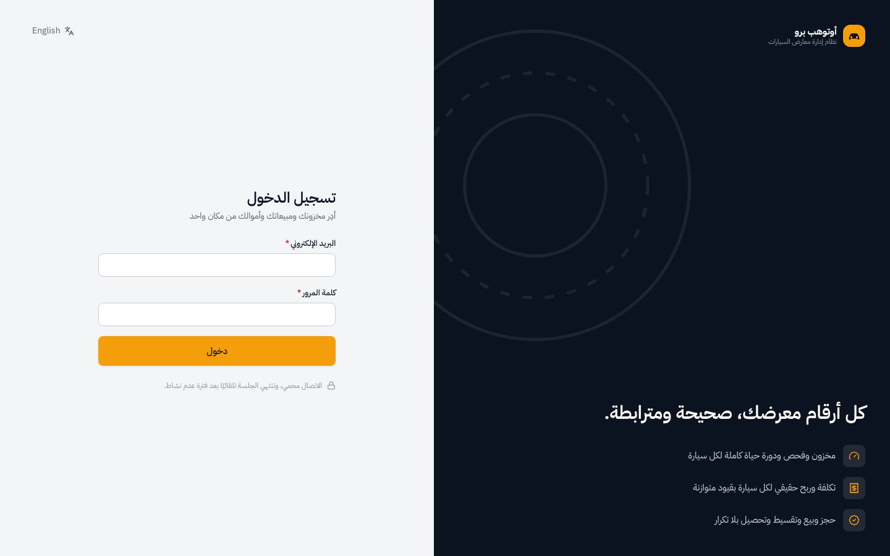
1234
شكل 1: صفحة تسجيل الدخول
البريد الإلكتروني: البريد الذي أنشأ به المدير حسابك.
كلمة المرور: كلمة المرور المبدئية التي سلّمك إياها المدير، أو التي غيّرتها لاحقًا.
دخول: يتحقق من البيانات ويفتح لوحة التحكم. عند الخطأ تظهر رسالة «البريد الإلكتروني أو كلمة المرور غير صحيحة». وبعد محاولات كثيرة متتالية يطلب منك النظام الانتظار قليلًا («طلبات كثيرة جدًا»).
English / العربية: يبدّل لغة الواجهة واتجاهها، ويتذكر المتصفح اختيارك.
الأمانالاتصال مشفّر، وتنتهي الجلسة تلقائيًا بعد فترة من عدم النشاط؛ عندها يطلب منك النظام الدخول مرة أخرى ويعيدك إلى الصفحة نفسها. لا تشارك كلمة مرورك مع أحد: كل عملية في النظام تُسجَّل باسم من نفّذها في سجل التدقيق.
QQ011QQاختيار الشركة
إذا كان حسابك مرتبطًا بأكثر من شركة تظهر بعد الدخول صفحة اختر الشركة؛ اضغط على الشركة التي تريد العمل عليها. تستطيع لاحقًا التبديل بين الشركات من قائمة المستخدم ← تبديل الشركة، وكل شركة تعرض بياناتها وصلاحياتك فيها فقط.
شكل 2: صفحة اختيار الشركة لمستخدم يعمل في شركتين
QQ012QQدعوات الانضمام
عندما يضيف مدير شركة أخرى بريدك الإلكتروني المسجّل مسبقًا في النظام، لا يحصل على أي صلاحية في حسابك تلقائيًا؛ بل تصلك دعوة انضمام تظهر في صفحة اختيار الشركة وفي قائمة المستخدم (دعوات معلّقة). لا تتغير كلمة مرورك ولا بياناتك بسبب الدعوة.
1234
شكل 3: دعوة انضمام معلّقة من شركة أخرى، وأسفلها الشركة الحالية
الشركة الحالية التي أنت عضو فيها (النقطة الخضراء تعني أنها الشركة النشطة الآن).
الشركة التي دعتك، مع الدور الذي ستحصل عليه وتاريخ الدعوة.
قبول: تصبح عضوًا في الشركة الداعية بالدور المذكور، وتظهر ضمن شركاتك.
رفض: تُرفض الدعوة ولا يحصل أي تغيير على حسابك.
تنبيهلا تنتهي صلاحية الدعوات تلقائيًا، ولا تستطيع الشركة الداعية سحبها؛ تبقى معلّقة حتى تقبلها أو ترفضها.
QQ013QQواجهة النظام: القائمة الجانبية والشريط العلوي
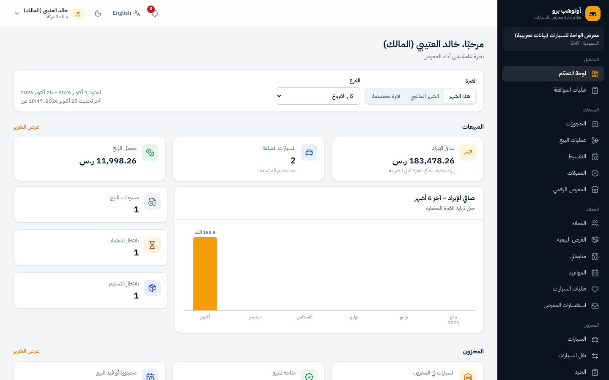
123456
شكل 4: الواجهة العامة: القائمة الجانبية يمين الشاشة والشريط العلوي
بطاقة الشركة: اسم الشركة الحالية وسوقها وعملتها الأساسية.
القائمة الجانبية: مجموعات الصفحات (التشغيل، المبيعات، العملاء، المخزون، المشتريات، المالية، الإدارة). لا تظهر إلا الصفحات المسموح بها لدورك، والصفحة المفتوحة مميّزة بلون أفتح.
جرس التنبيهات: الرقم الأحمر عدد التنبيهات غير المقروءة (انظر فصل «التشغيل»).
تبديل اللغة بين العربية والإنجليزية.
المظهر: تبديل بين الوضع الفاتح والداكن.
قائمة المستخدم: اسمك ودورك؛ اضغط لفتح القائمة.
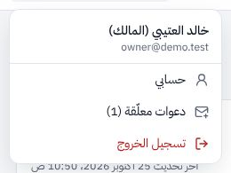
شكل 5: قائمة المستخدم
تحتوي قائمة المستخدم على:
حسابي: بيانات عضويتك وتغيير كلمة المرور.
دعوات معلّقة: تظهر فقط إذا كانت لديك دعوات، وتفتح صفحة الدعوات.
تبديل الشركة: تظهر فقط إذا كنت عضوًا في أكثر من شركة.
تسجيل الخروج: ينهي الجلسة على هذا الجهاز.
QQ014QQحسابي وتغيير كلمة المرور
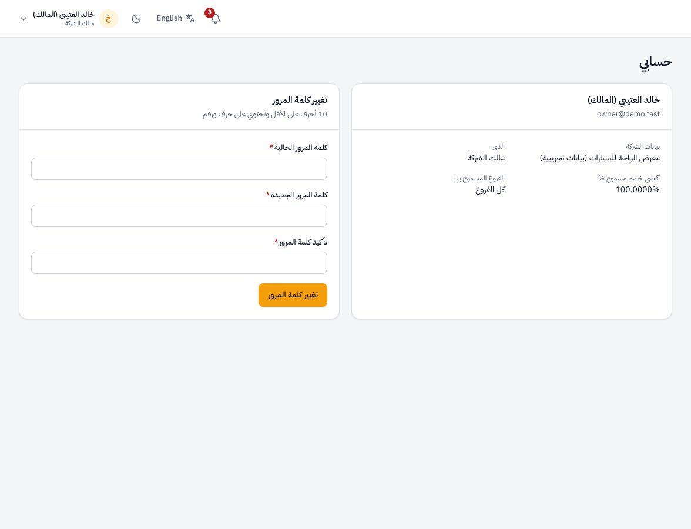
شكل 6: صفحة «حسابي»
تعرض البطاقة اليمنى اسمك وبريدك والشركة ودورك وأقصى خصم مسموح لك والفروع المسموح بها. ولتغيير كلمة المرور أدخل كلمة المرور الحالية ثم الجديدة (10 أحرف على الأقل وتحتوي على حرف ورقم) وأكّدها، واضغط تغيير كلمة المرور. بعد التغيير يُسجَّل خروجك تلقائيًا من الأجهزة الأخرى. إذا نسيت كلمة المرور فاطلب من مدير الشركة إعادة تعيين كلمة المرور من صفحة المستخدمين.
QQ015QQالعمل من الجوال
الواجهة متجاوبة وتعمل على شاشة الجوال: تختفي القائمة الجانبية وتُفتح بزر القائمة (☰) في الشريط العلوي، وتتحول الجداول والبطاقات إلى عمود واحد. هذا مناسب لموظف المبيعات في ساحة المعرض (البحث عن سيارة، تسجيل تواصل، حجز موعد، بدء تجربة قيادة).
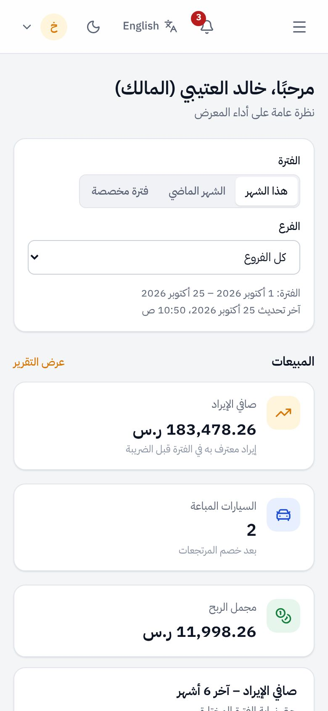
شكل 7: لوحة التحكم على الجوال
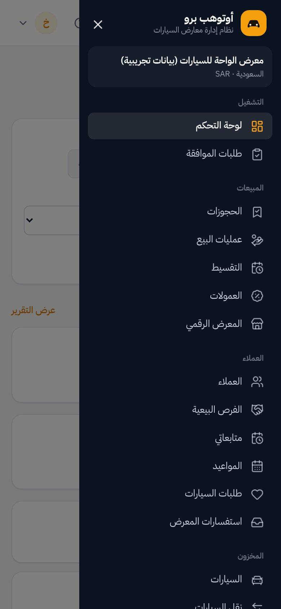
شكل 8: القائمة الجانبية مفتوحة على الجوال
QQ016QQلوحة التحكمنظرة عامة سريعة على المبيعات والمخزون والعملاء والمالية
تظهر لكل من يملك صلاحية «عرض لوحة التحكم»؛ وتختلف المؤشرات حسب صلاحيات الدور
هي أول صفحة بعد الدخول (لوحة التحكم في مجموعة «التشغيل»). تجمع أهم الأرقام لفترة تختارها، مقسمة إلى أربعة أقسام: المبيعات، والمخزون، والعملاء المحتملون والمواعيد، والمالية. كل الأرقام محسوبة من العمليات المسجلة فعلًا ومن دفتر الأستاذ، ولا تُدخل يدويًا.
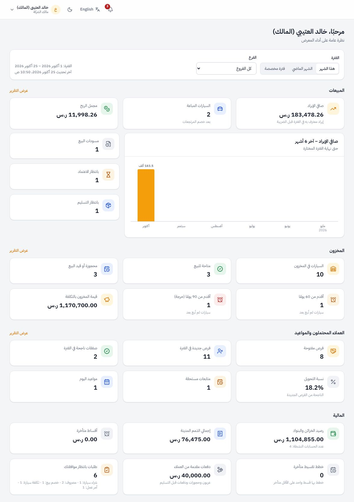
123456
شكل 9: لوحة التحكم كما يراها المالك (كل الفروع)
الفترة: هذا الشهر أو الشهر الماضي أو فترة مخصصة (تظهر عندها خانتا «من» و«إلى»). يظهر بجانبها نص الفترة ووقت آخر تحديث.
الفرع: كل الفروع أو فرع محدد. يظهر هذا الاختيار لمن يملك الوصول إلى كل الفروع؛ أما المستخدم المقيّد بفروع فيرى أرقام فروعه فقط.
قسم المبيعات: صافي الإيراد (الإيراد المعترف به في الفترة قبل الضريبة)، والسيارات المباعة (بعد خصم المرتجعات)، ومجمل الربح، وعدد مسودات البيع وما هو بانتظار الاعتماد وبانتظار التسليم، ورسم بياني لصافي الإيراد في آخر 6 أشهر.
عرض التقرير: ينقلك إلى التقرير المفصّل الخاص بالقسم (المبيعات والربحية، تقييم المخزون، تحويل العملاء المحتملين).
قسم المخزون: السيارات في المخزون، والمتاحة للبيع، والمحجوزة أو قيد البيع، وعدد السيارات الأقدم من حد الركود (60 يومًا) والحد الحرج (90 يومًا) حسب إعدادات الشركة، وقيمة المخزون بالتكلفة.
قسم المالية: رصيد الخزائن والبنوك، وإجمالي الذمم المدينة، والأقساط المتأخرة وخطط التقسيط المتأخرة، ودفعات مقدمة من العملاء (العرابين والدفعات قبل التسليم)، وطلبات بانتظار موافقتك مع تفصيلها حسب النوع.
قسم العملاء المحتملون والمواعيد يعرض الفرص المفتوحة، والفرص الجديدة في الفترة، والصفقات الناجحة، ونسبة التحويل (الناجحة من الفرص الجديدة)، والمتابعات المستحقة، ومواعيد اليوم.
لوحة التحكم لمندوب المبيعات
يرى مندوب المبيعات أقسام المبيعات والعملاء بشارة «أرقامك الشخصية فقط»: أي أن الأرقام تخص عملياته وعملاءه وحده. ولا يظهر له قسم المالية لأنه لا يملك صلاحيات عرض الخزينة والتقارير المالية.
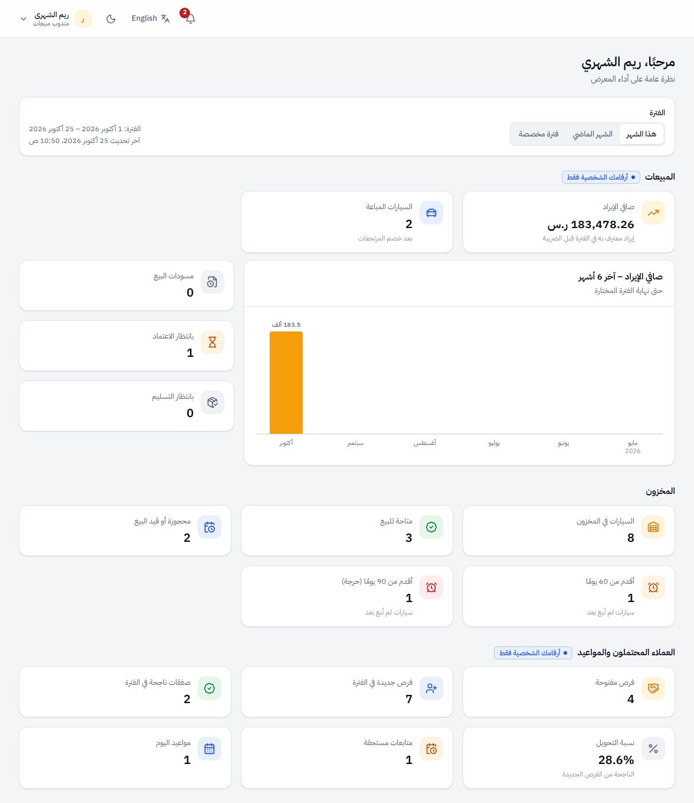
شكل 10: لوحة التحكم لمندوبة المبيعات: أرقام شخصية فقط
نصيحةاجعل لوحة التحكم بداية يومك: ابدأ بـ«طلبات بانتظار موافقتك» و«متابعات مستحقة» و«مواعيد اليوم»، ثم راجع السيارات الراكدة أسبوعيًا.
ملاحظةبطاقة «دفعات مقدمة من العملاء» تظهر فقط لمن يملك الوصول إلى كل الفروع، لأن عرابين الحجوزات تُسجَّل على مستوى العميل لا الفرع.
تظهر لمن يملك أي صلاحية اعتماد (الشراء، التكاليف، المصروفات، أوامر العمل، الاستردادات، الخصومات، البيع دون الحد الأدنى، فروقات الخزينة) أو صلاحية «عرض طلبات الموافقة»
تجمع هذه الصفحة كل المستندات التي تنتظر قرارك أنت تحديدًا، حسب صلاحياتك وفروعك؛ فمدير المبيعات مثلًا لا يرى إلا طلبات الخصم، والمحاسب يرى التكاليف والمصروفات والاستردادات.
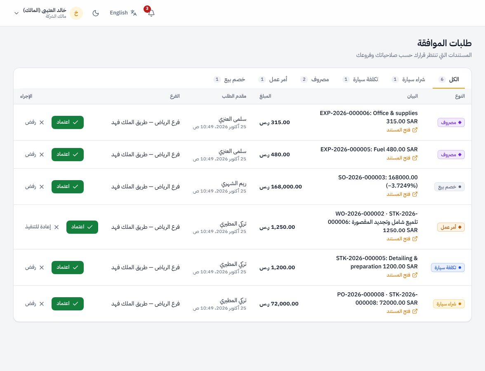
12345
شكل 11: صفحة طلبات الموافقة
تبويبات الأنواع: الكل ثم تبويب لكل نوع (شراء سيارة، تكلفة سيارة، مصروف، أمر عمل، خصم بيع…) مع عدد الطلبات فيه.
النوع والبيان: شارة نوع الطلب، ثم ملخص المستند (رقمه ومبلغه). يظهر البيان بالصيغة التي سجّلها النظام عند فتح الطلب، وقد يكون بالإنجليزية.
فتح المستند: يفتح صفحة المستند الأصلي لمراجعته كاملًا قبل القرار (يُنصح به دائمًا للمبالغ الكبيرة).
اعتماد: يفتح نافذة تأكيد صغيرة فيها ملخص الطلب وحقل ملاحظة (اختياري). عند التأكيد تُرحَّل القيود المحاسبية الخاصة بالمستند فورًا (مثلًا: اعتماد شراء سيارة يُرحّل قيمتها إلى المخزون وذمم الموردين).
رفض: يطلب السبب إلزاميًا، ولا يُرحَّل المستند، ويظهر السبب لمقدّم الطلب. في أوامر العمل يكون الزر إعادة للتنفيذ فيعود الأمر إلى «قيد التنفيذ» لتصحيح بنوده.
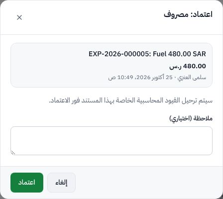
شكل 12: نافذة الاعتماد من صندوق الموافقات
فصل المهامإذا كنت أنت من قدّم الطلب يظهر بدل الأزرار «بانتظار معتمد آخر»: لا يمكنك اعتماد طلبك ولو كنت تملك الصلاحية.
سداد فوري عند الاعتمادالاعتماد من الصندوق لا يسدد المبلغ. إذا أردت الاعتماد والسداد معًا (مثل «اعتماد وسداد» لعملية شراء) فافتح المستند واعتمده من صفحته.
طلبات الاسترداد تُعتمد هنا ثم تُصرف لاحقًا من صفحة «المبالغ المستردة»، وطلبات الخصم والبيع دون الحد الأدنى تُعتمد ثم يكمل البائع تأكيد البيع.
QQ019QQالتنبيهات
لكل مستخدم؛ كل شخص يرى تنبيهاته فقط
جرس التنبيهات في الشريط العلوي يعرض آخر التنبيهات غير المقروءة. اضغط على أي تنبيه لفتح الصفحة المتعلقة به، أو تعليم الكل كمقروء، أو عرض كل التنبيهات لفتح صفحة التنبيهات الكاملة.
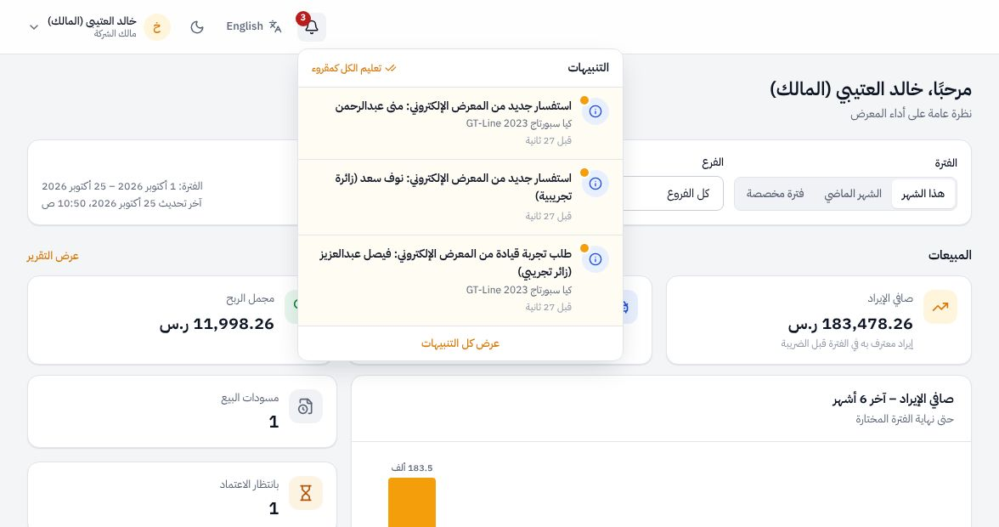
شكل 13: قائمة جرس التنبيهات
يرسل النظام تنبيهًا داخليًا في الحالات التالية:
إسناد عميل أو فرصة بيعية أو موعد / تجربة قيادة إليك، وتذكير قبل الموعد بقليل.
حلول موعد متابعة فرصة بيعية مسندة إليك.
حجز ينتهي خلال 24 ساعة، أو انتهى بالفعل.
قسط مستحق قريبًا أو متأخر.
دخول سيارة مطابقة لطلب أحد عملائك (طلبات السيارات).
استفسار أو طلب تجربة قيادة جديد من المعرض الرقمي (لمن يوزّع الفرص البيعية).
تذكيرات المتابعة والمواعيد وانتهاء الحجوزات والأقساط ومطابقة الطلبات تُنشئها مهام تلقائية تعمل دوريًا في الخلفية، لذلك قد يتأخر ظهورها دقائق قليلة. التنبيهات داخل النظام فقط؛ لا ترسل بريدًا ولا رسائل جوال.
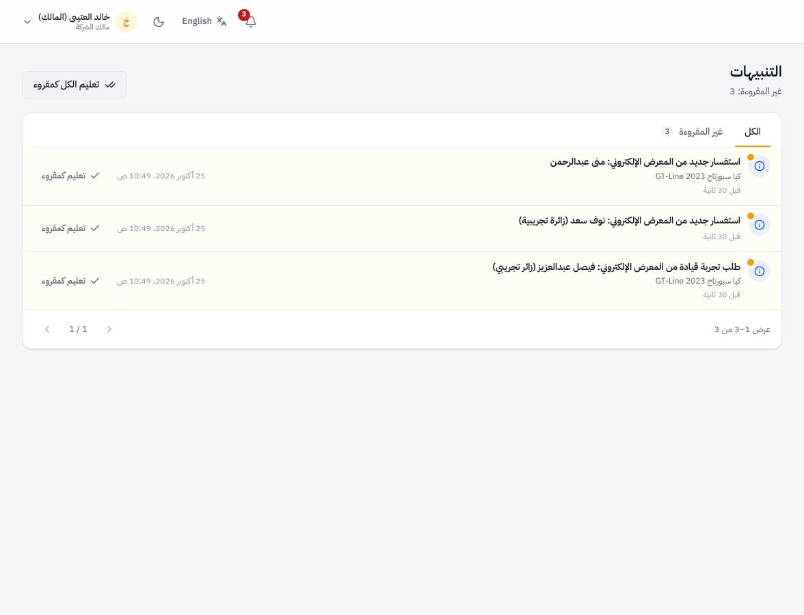
شكل 14: صفحة التنبيهات: الكل / غير المقروءة
QQ020QQالمبيعاتالحجوزات، عمليات البيع، التقسيط، العمولات
تضم مجموعة المبيعات في القائمة الجانبية: الحجوزات، عمليات البيع، التقسيط، العمولات، والمعرض الرقمي (يُشرح في فصل مستقل).
الحجز يرفع سيارة متاحة للبيع من البيع لصالح عميل محدد مدة معينة، غالبًا مقابل عربون، حتى يتحول إلى بيع أو يُلغى أو تنتهي مدته. لا يمكن أن يكون للسيارة أكثر من حجز ساري واحد.
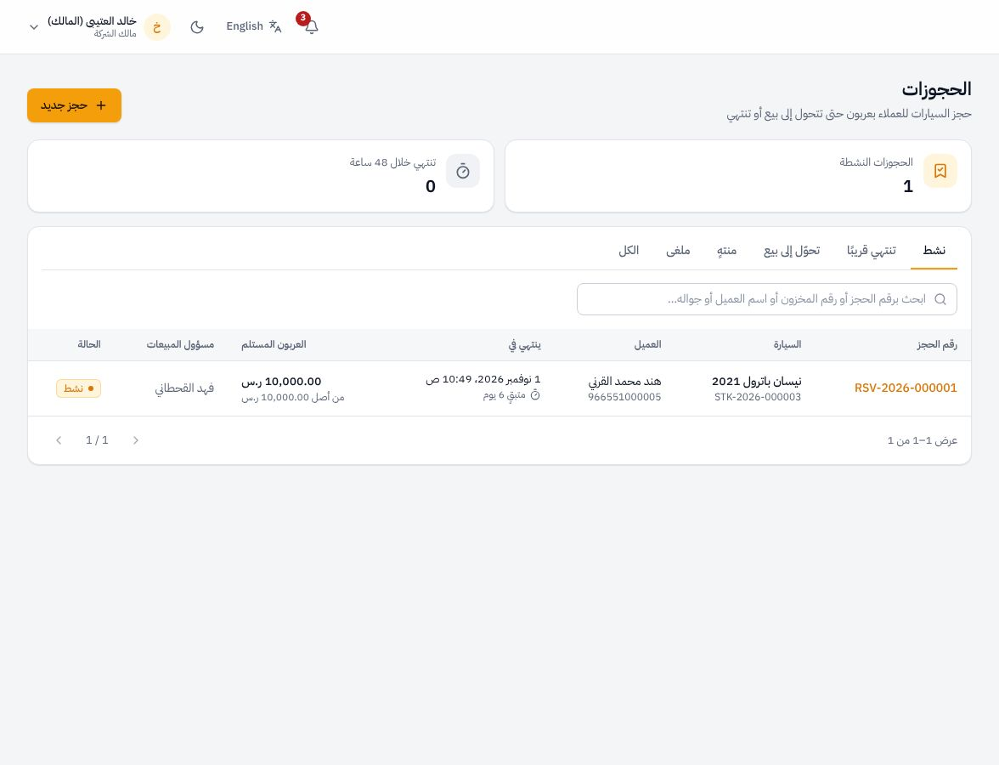
123
شكل 15: قائمة الحجوزات
حجز جديد: يفتح نافذة إنشاء الحجز.
التبويبات: نشط، تنتهي قريبًا (خلال 48 ساعة)، تحوّل إلى بيع، منتهٍ، ملغى، الكل. وفي الأعلى بطاقتا «الحجوزات النشطة» و«تنتهي خلال 48 ساعة».
البحث برقم الحجز أو رقم المخزون أو اسم العميل أو جواله. يعرض الجدول السيارة والعميل وموعد الانتهاء والمتبقي من المدة والعربون المستلم من أصل المطلوب ومسؤول المبيعات.
نافذة «حجز جديد»
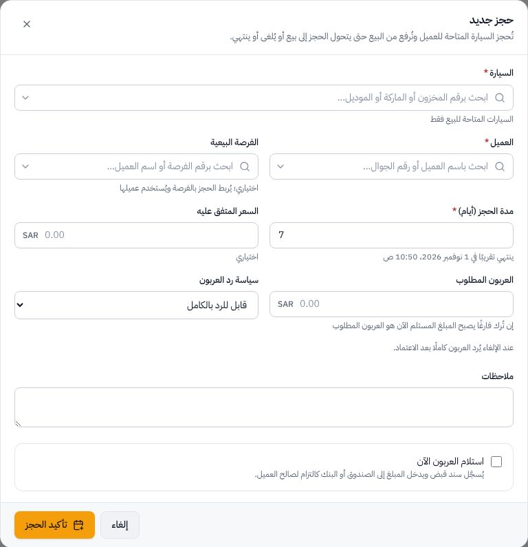
شكل 16: نافذة إنشاء حجز
السيارة: ابحث برقم المخزون أو الماركة أو الموديل؛ تظهر السيارات المتاحة للبيع فقط.
مدة الحجز (أيام): الافتراضي من إعدادات الشركة (7 أيام)، ويظهر تاريخ الانتهاء التقريبي أسفلها.
السعر المتفق عليه (اختياري): إن كان أقل من الحد الأدنى للسيارة يرفضه النظام إلا باعتماد مدير.
العربون المطلوب: إن تُرك فارغًا يصبح المبلغ المستلم الآن هو العربون المطلوب.
سياسة رد العربون: قابل للرد بالكامل، أو غير قابل للرد، أو رد جزئي (مع النسبة). تحدد ما يحدث للعربون عند الإلغاء.
استلام العربون الآن: عند تفعيله تظهر حقول الصندوق أو الحساب البنكي والمبلغ وطريقة الدفع والمرجع؛ فيُسجَّل سند قبض ويدخل المبلغ الخزينة.
تأكيد الحجز: تصبح السيارة «محجوزة» فورًا.
الأثر المحاسبييُسجَّل العربون كالتزام على الشركة لصالح العميل (مدين النقدية 1100 / دائن دفعات مقدمة من العملاء 2100) وليس إيرادًا. يتحول إلى جزء من ثمن السيارة عند تأكيد البيع، أو يُرد للعميل، أو يُصادر فيصبح «إيرادًا آخر» (4200).
صفحة الحجز
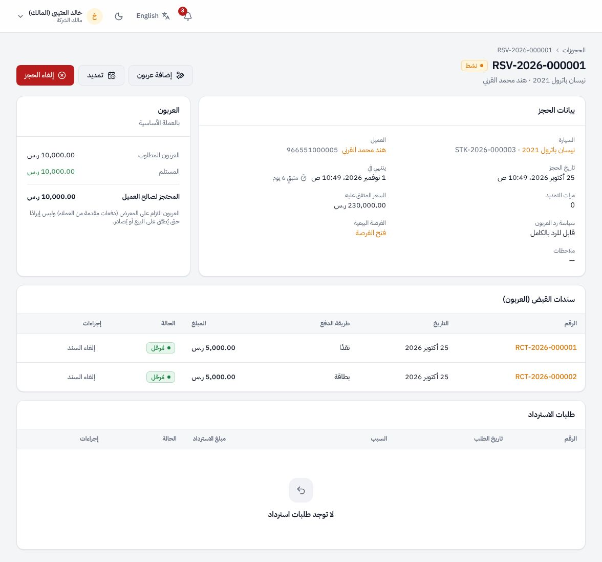
1234
شكل 17: حجز نشط بعربون مستلم على دفعتين
إضافة عربون: استلام دفعة إضافية على العربون (سند قبض جديد)، حتى اكتمال العربون المطلوب.
تمديد: يمدد الحجز عددًا من الأيام (1–90 في كل مرة، وبحد أقصى 180 يومًا للحجز كله) مع ذكر السبب الذي يُحفظ في سجل التدقيق.
إلغاء الحجز: تعود السيارة «متاحة»، ويُسوّى العربون حسب ما تختاره في النافذة.
بطاقة العربون: المطلوب والمستلم والمحتجز لصالح العميل، مع تذكير بأن العربون التزام وليس إيرادًا.
أسفل الصفحة جدول سندات القبض (العربون) مع زر إلغاء السند لكل سند (يعكس القيد ويُخرج المبلغ من الخزينة)، وجدول طلبات الاسترداد المرتبطة بالحجز.
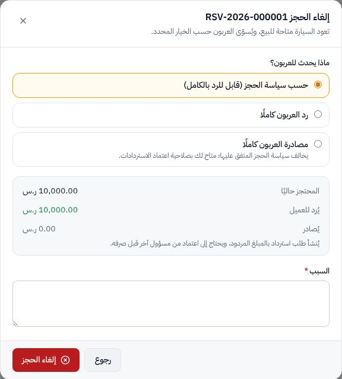
شكل 18: نافذة إلغاء الحجز وتسوية العربون
ماذا يحدث للعربون؟
حسب سياسة الحجز: يُرد أو يُصادر وفق السياسة المتفق عليها.
رد العربون كاملًا أو مصادرة العربون كاملًا: خياران يخالفان السياسة، ومتاحان فقط لمن يملك صلاحية «اعتماد الاسترداد».
يعرض الملخص المحتجز حاليًا وما سيُرد وما سيُصادر. السبب إلزامي.
الاسترداد ليس فوريًاالمبلغ المردود لا يخرج من الخزينة عند الإلغاء؛ يُنشأ طلب استرداد بانتظار اعتماد مسؤول آخر، ثم يُصرف من صفحة «المبالغ المستردة».
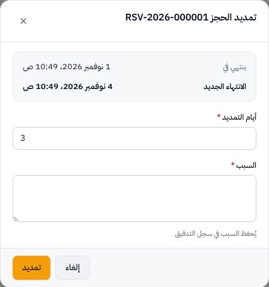
شكل 19: نافذة تمديد الحجز
نافذة التمديد تعرض موعد الانتهاء الحالي والجديد قبل التأكيد، وتطلب عدد أيام التمديد والسبب.
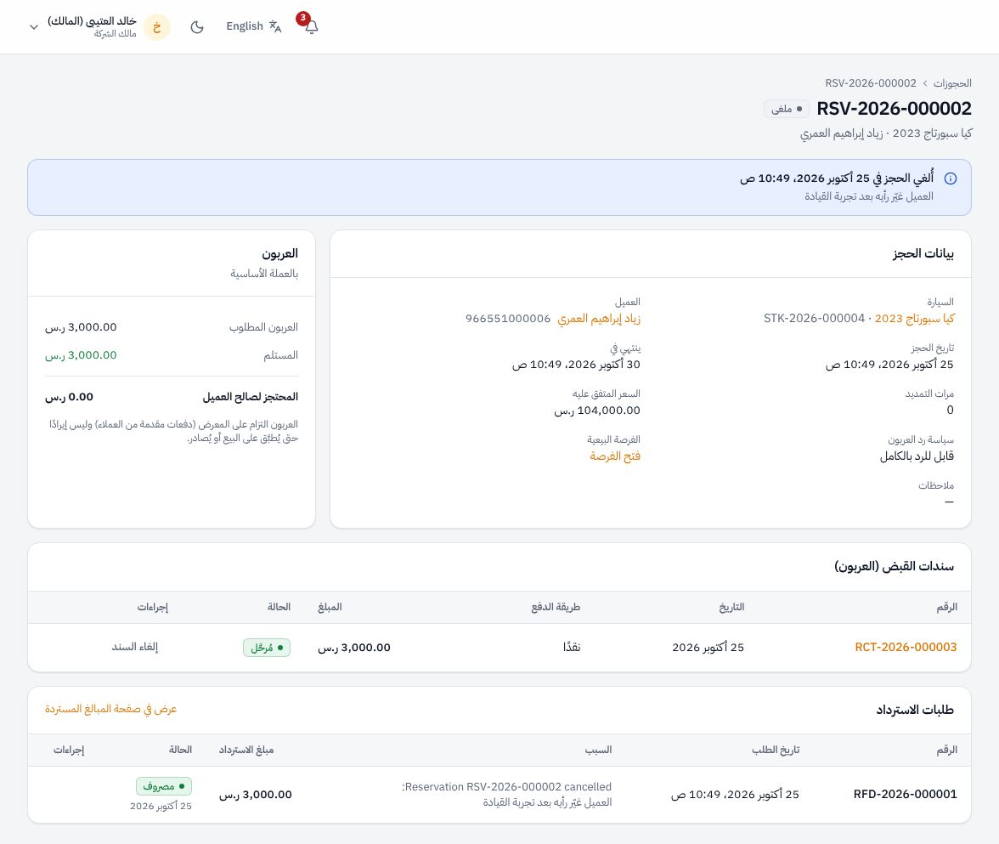
شكل 20: حجز ملغى: العربون أصبح طلب استرداد مصروفًا
عند انتهاء مدة الحجز دون بيع أو إلغاء، تعود السيارة متاحة تلقائيًا ويبقى العربون محتجزًا لصالح العميل؛ تظهر في صفحة الحجز رسالة تطلب منك إما طلب استرداده أو تطبيقه على عملية بيع. ويصل لمسؤول المبيعات تنبيه قبل الانتهاء بـ24 ساعة وعند الانتهاء. ويمكن الحجز أيضًا من تبويب الحجز في صفحة السيارة.
عملية البيع تمر بمراحل واضحة، وتظهر حالتها كشارة في القائمة وفي صفحة العملية:
الحالة
المعنى وما يمكن فعله
مسودة
عرض سعر قابل للتعديل. السيارة تصبح «قيد إتمام البيع». يمكن تسجيل دفعات مقدمة.
بانتظار اعتماد السعر
الخصم تجاوز حد البائع أو السعر أقل من الحد الأدنى؛ تنتظر اعتماد مستخدم آخر.
سعر معتمد
اعتُمد السعر، ويمكن تأكيد البيع.
مؤكدة
السيارة «مباعة»، والسعر والضريبة والتكلفة مثبتة، وجدول الأقساط منشأ. يجري التحصيل وإصدار المستندات.
مُسلَّمة
سُلّمت السيارة واعتُرف بالإيراد وتكلفة المبيعات (في الإعداد الافتراضي).
ملغاة / مرتجعة
أُلغيت قبل التسليم، أو أُرجعت السيارة بعده؛ تُعكس القيود ويصبح المقبوض رصيدًا للعميل.
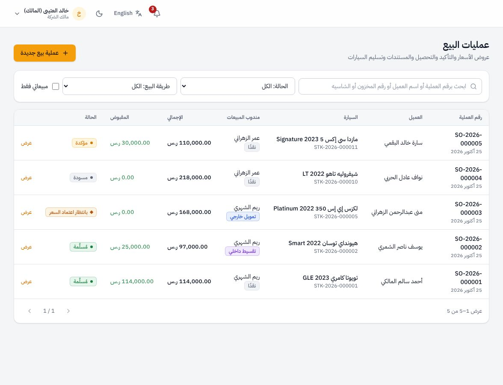
12
شكل 21: قائمة عمليات البيع
عملية بيع جديدة: يفتح نموذج البيع.
البحث والتصفية: برقم العملية أو العميل أو رقم المخزون أو الشاسيه، وحسب الحالة وطريقة البيع، ومبيعاتي فقط. يعرض الجدول الإجمالي والمقبوض لكل عملية.
نموذج «عملية بيع جديدة»
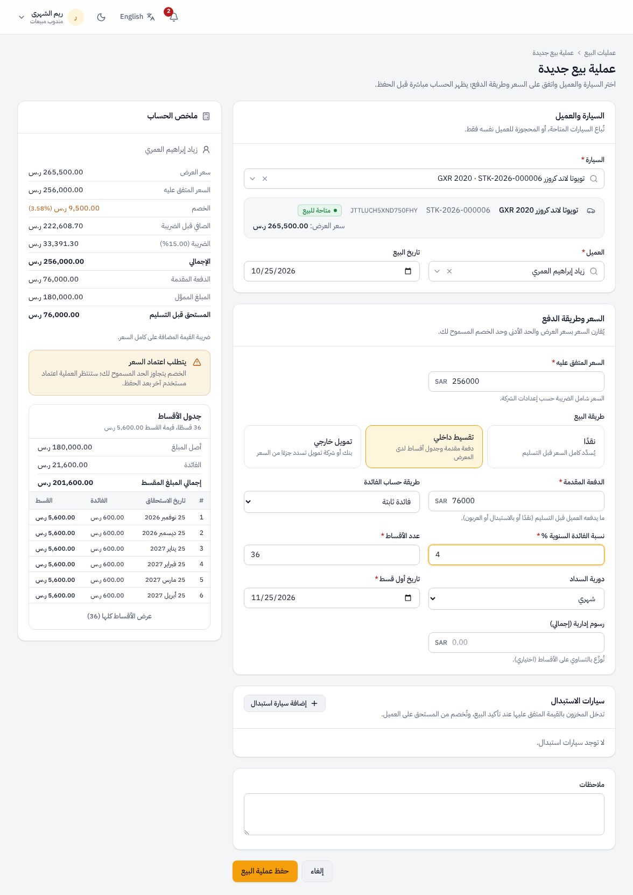
123456
شكل 22: نموذج البيع بالتقسيط مع ملخص الحساب المباشر
السيارة: تُباع السيارات المتاحة، أو المحجوزة للعميل نفسه فقط (يُحوَّل عربونه إلى البيع عند التأكيد). تظهر بطاقة السيارة بحالتها وسعر العرض.
العميل وتاريخ البيع. ويظهر لمن يملك صلاحية «توزيع الفرص البيعية» حقل مندوب المبيعات للبيع باسم مندوب آخر.
السعر المتفق عليه: شامل الضريبة أو قبلها حسب إعدادات الشركة (مذكور أسفل الحقل).
طريقة البيع: نقدًا (يُسدَّد كامل السعر قبل التسليم)، أو تقسيط داخلي (دفعة مقدمة + طريقة حساب الفائدة: ثابتة / رصيد متناقص / بدون فوائد + نسبة الفائدة السنوية + عدد الأقساط + دورية السداد + تاريخ أول قسط + رسوم إدارية اختيارية تُوزَّع على الأقساط)، أو تمويل خارجي (اسم جهة التمويل ورقم المرجع والمبلغ الذي ستدفعه للمعرض).
ملخص الحساب: يُحدَّث فورًا: سعر العرض، والخصم ونسبته، والصافي قبل الضريبة، والضريبة، والإجمالي، والدفعة المقدمة، والمبلغ الممول، والمستحق قبل التسليم، وجدول الأقساط المقترح. ويبيّن إن كان السعر ضمن صلاحياتك أو يتطلب اعتماد السعر.
حفظ عملية البيع: تُحفظ كمسودة (أو بانتظار اعتماد السعر).
سيارات الاستبدال: زر إضافة سيارة استبدال يسجّل سيارة العميل القديمة وقيمتها المتفق عليها (حتى 3 سيارات)؛ تُخصم القيمة من المستحق على العميل، وتدخل السيارة المخزون بحالة «واردة حديثًا» وبتكلفة تساوي القيمة المتفق عليها عند تأكيد البيع.
التقسيط الداخلييجب تفعيل «وحدة التقسيط الداخلي» من إعدادات الشركة أولًا، وإلا يرفض النظام هذه الطريقة. وإذا غطّت الدفعة المقدمة السعر كاملًا يطلب منك النظام اختيار البيع النقدي.
صفحة عملية البيع: اعتماد السعر
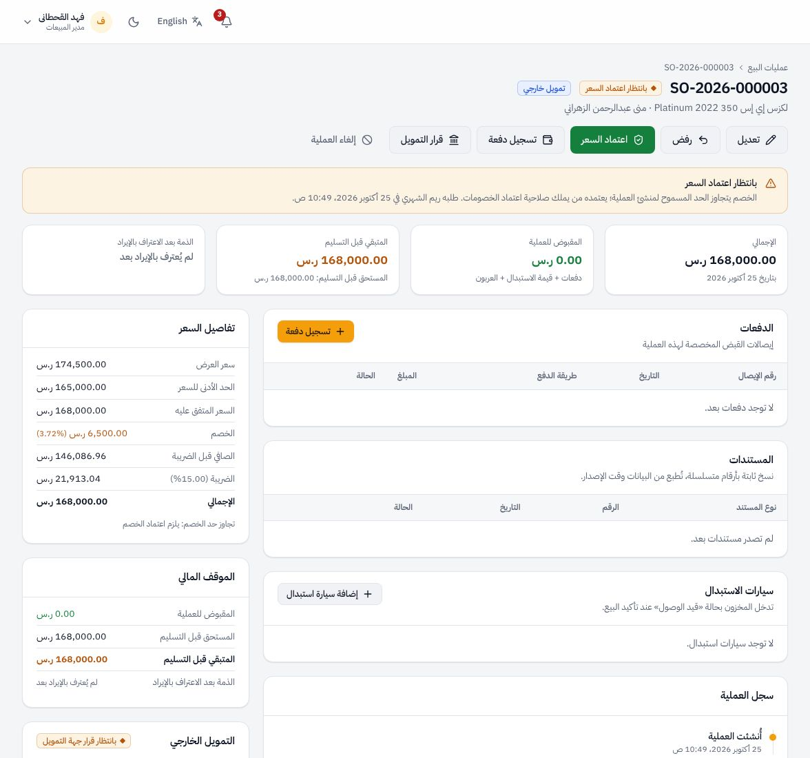
123
شكل 23: عملية بخصم يتجاوز حد المندوبة، كما يراها مدير المبيعات
تنبيه بانتظار اعتماد السعر مع السبب (تجاوز حد الخصم أو أقل من الحد الأدنى) ومن طلبه ومتى.
اعتماد السعر: لمن يملك صلاحية اعتماد الخصومات (أو البيع دون الحد الأدنى)، مع ملاحظة اختيارية. لا يستطيع البائع نفسه اعتماده.
رفض: تعود العملية مسودة مع السبب؛ يستطيع البائع تعديل السعر (فيُعاد طلب الاعتماد) أو إلغاء العملية.
في رأس الصفحة أيضًا: تعديل (قبل التأكيد فقط)، وتسجيل دفعة، وقرار التمويل (للتمويل الخارجي: تسجيل موافقة أو رفض جهة التمويل؛ لا يمكن التسليم قبل الموافقة)، وإلغاء العملية. وتعرض البطاقات العلوية: الإجمالي، والمقبوض للعملية (دفعات + قيمة الاستبدال + العربون)، والمتبقي قبل التسليم، والذمة بعد الاعتراف بالإيراد.
تأكيد البيع
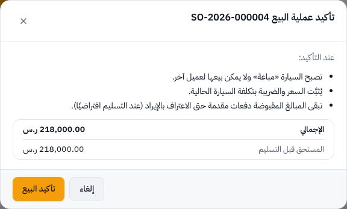
شكل 24: نافذة تأكيد البيع
زر تأكيد البيع (صلاحية «تأكيد المبيعات») يعرض ما سيحدث: تصبح السيارة «مباعة» ولا يمكن بيعها لعميل آخر، ويُثبَّت السعر والضريبة بتكلفة السيارة الحالية، ويُنشأ جدول الأقساط ويُثبَّت (للتقسيط)، وتدخل سيارات الاستبدال المخزون، ويُحوَّل عربون الحجز إلى العملية. تبقى المبالغ المقبوضة دفعات مقدمة حتى الاعتراف بالإيراد. وإذا كان للبائع سياسة عمولة تُنشأ عمولته «متوقعة».
التحصيل والمستندات والتسليم
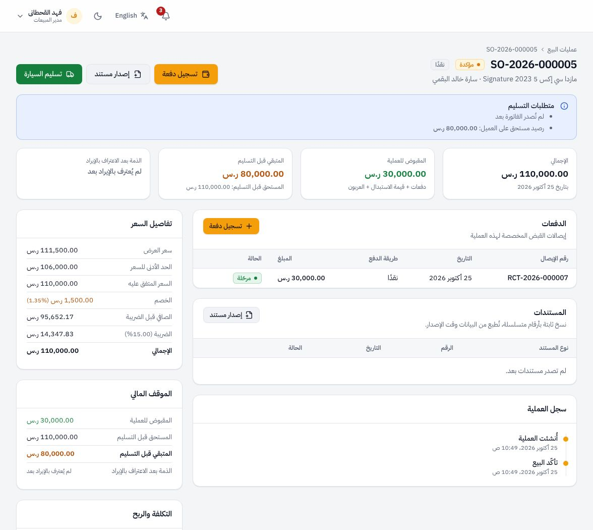
123
شكل 25: عملية مؤكدة تنتظر التسليم (مدفوع جزء من الثمن)
تسجيل دفعة: سند قبض على العملية من خزينة أو حساب بنكي.
تسليم السيارة: يتحقق من شروط التسليم قبل التنفيذ.
إصدار مستند: عقد البيع أو الفاتورة أو محضر التسليم.
إلغاء العملية: متاح قبل التسليم (إلغاء المؤكدة يحتاج صلاحية خاصة).
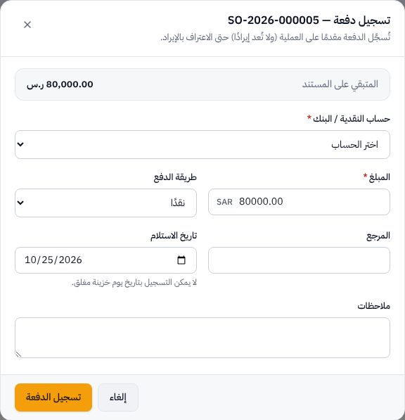
شكل 26: نافذة تسجيل دفعة
تسجيل دفعة: اختر حساب النقدية / البنك، واكتب المبلغ (افتراضيًا المتبقي على المستند)، وطريقة الدفع (نقدًا، تحويل بنكي، بطاقة، شيك، شركة تمويل، أخرى)، والمرجع وتاريخ الاستلام. إذا كان الحساب بعملة أجنبية يظهر حقل سعر الصرف والمعادل بالعملة الأساسية.
الأثر المحاسبيقبل الاعتراف بالإيراد تُسجَّل الدفعة مقدمًا على العملية (مدين النقدية / دائن دفعات مقدمة 2100) ولا تُعد إيرادًا. بعد الاعتراف تُخصم من ذمة العميل مباشرة (دائن ذمم العملاء 1200).
لا يمكن التسجيل بتاريخ يوم خزينة مغلق. ولكل دفعة زر إلغاء في جدول الدفعات (قيد عكسي).
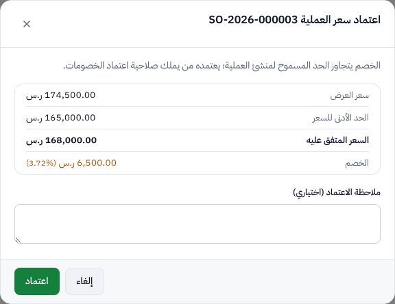
شكل 27: نافذة اعتماد سعر عملية البيع
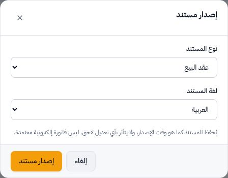
شكل 28: نافذة إصدار مستند
المستندات: إصدار مستند يختار نوع المستند (عقد البيع، الفاتورة، محضر التسليم) ولغة المستند. يُحفظ المستند بأرقام متسلسلة كما هو وقت الإصدار ولا يتأثر بأي تعديل لاحق، ويُفتح بزر PDF. يمكن إلغاء مستند قبل التسليم فقط ثم إصدار غيره. المستندات تجارية وليست فاتورة إلكترونية معتمدة لدى أي جهة ضريبية.
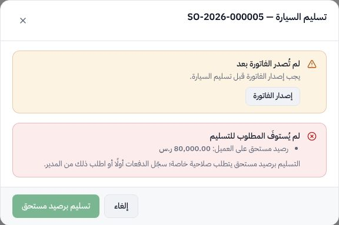
شكل 29: نافذة التسليم: الشروط غير مستوفاة
تسليم السيارة يشترط: إصدار الفاتورة، وسداد المستحق قبل التسليم (أو الدفعة المقدمة للتقسيط)، وموافقة جهة التمويل للتمويل الخارجي. تعرض النافذة الشروط الناقصة؛ ويوجد فيها زر إصدار الفاتورة مباشرة.
من يملك صلاحية «التسليم مع وجود رصيد مستحق» يستطيع تسليم برصيد مستحق مع كتابة السبب (يُسجَّل في سجل التدقيق ويبقى الرصيد ذمة على العميل). ويمكن تسجيل قراءة العداد عند التسليم.
الأثر المحاسبي عند التسليميُعترف بالإيراد: ذمة العميل بالإجمالي، مقابل الإيراد الصافي (4000) والضريبة المستحقة (2200)؛ وتُنقل تكلفة السيارة من المخزون (1300) إلى تكلفة المبيعات (5000)؛ وتُطبَّق المبالغ المقبوضة مقدمًا على الذمة. وفي التقسيط تُسجَّل الفوائد والرسوم إيرادًا مؤجلًا (2400) يُعترف به مع تحصيل كل قسط.
صفحة عملية مُسلَّمة
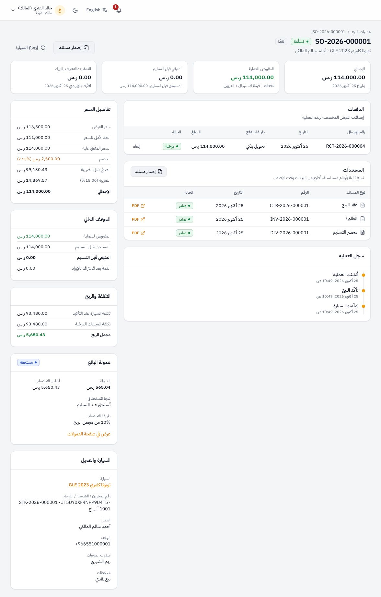
123456
شكل 30: عملية بيع نقدي مُسلَّمة
البطاقات العلوية: الإجمالي، والمقبوض للعملية، والمتبقي قبل التسليم، والذمة بعد الاعتراف بالإيراد وتاريخه.
إرجاع السيارة: للعمليات المُسلَّمة فقط (لا تُلغى المُسلَّمة).
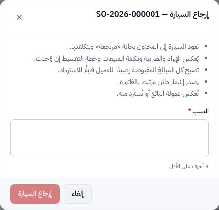
شكل 31: نافذة إرجاع السيارة
الإرجاع (صلاحية «معالجة المرتجعات») يعيد السيارة إلى المخزون بحالة «مرتجعة» وبتكلفتها، ويعكس الإيراد والضريبة وتكلفة المبيعات وخطة التقسيط إن وُجدت، ويجعل كل المقبوض رصيدًا للعميل قابلًا للاسترداد، ويصدر إشعارًا دائنًا مرتبطًا بالفاتورة، ويعكس عمولة البائع أو يستردها منه. السبب إلزامي.
الإلغاء قبل التسليم يعيد السيارة «متاحة» (أو محجوزة)، ويلغي سيارات الاستبدال المسجلة، ويعكس القيود، ويلغي العقد ويصدر إشعارًا دائنًا إن صدرت الفاتورة. يبقى المقبوض رصيدًا للعميل يُرد بطلب استرداد معتمد.
تُنشأ خطة التقسيط تلقائيًا عند تأكيد عملية بيع بالتقسيط، وتكون «مجدولة (قبل التسليم)» ثم تصبح «نشطة» بعد التسليم، ويبدأ تحصيل الأقساط عندها. صفحة التقسيط تعرض الخطط مع المتبقي والمتأخر والقسط القادم، مع خيار المتأخرة فقط.
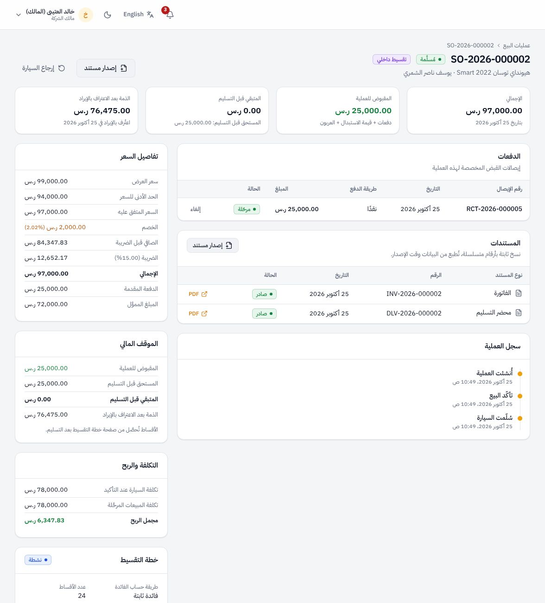
شكل 32: عملية بيع بالتقسيط مُسلَّمة: تفاصيل السعر والمبلغ الممول وخطة التقسيط
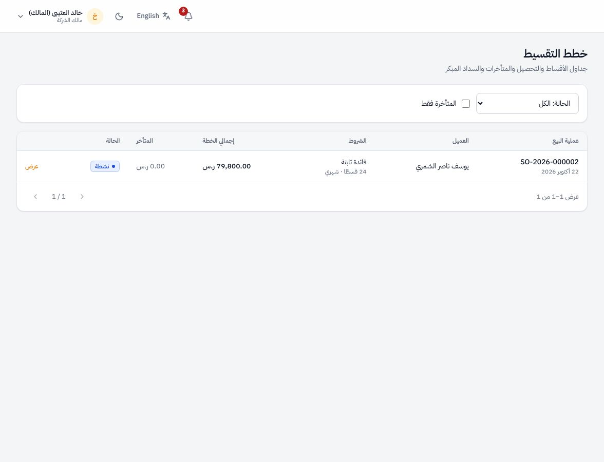
شكل 33: قائمة خطط التقسيط
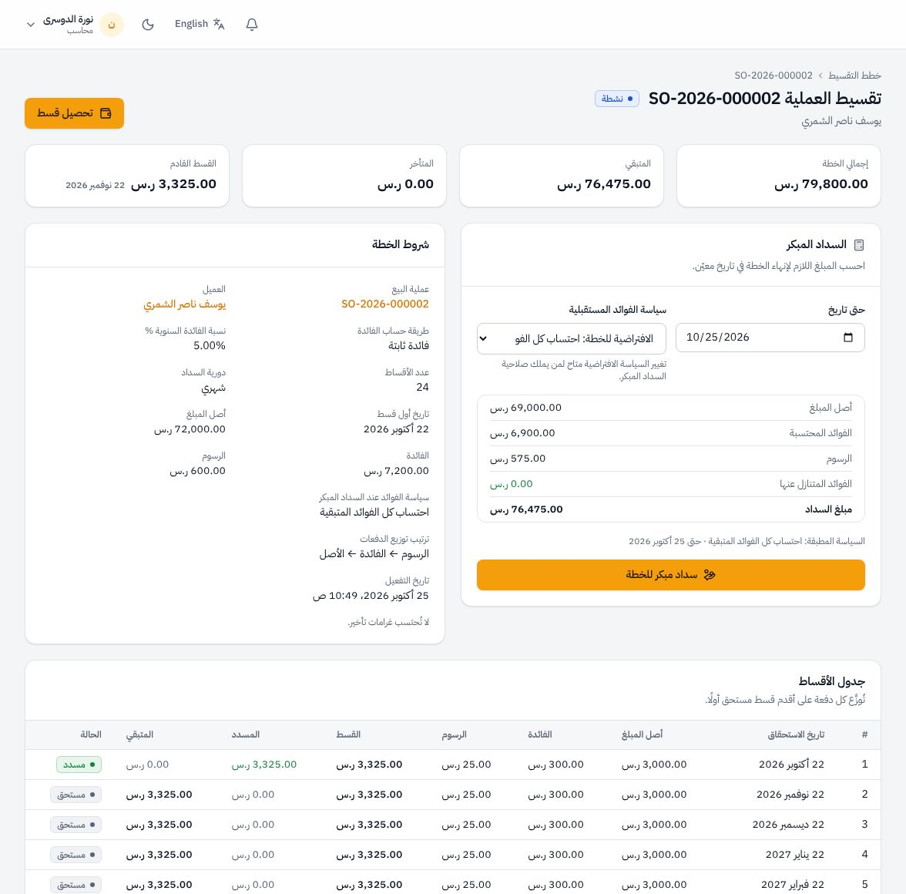
123
شكل 34: صفحة خطة التقسيط
تحصيل قسط: سند قبض يُوزَّع تلقائيًا على أقدم الأقساط غير المسددة، حسب ترتيب التوزيع (الرسوم ← الفائدة ← الأصل).
جدول الأقساط: لكل قسط تاريخ استحقاقه وأصله وفائدته ورسومه والمسدد والمتبقي وحالته (مستحق، مسدد جزئيًا، متأخر، مسدد، متنازل عنه).
السداد المبكر: اختر «حتى تاريخ» وسياسة الفوائد المستقبلية (إسقاط كل الفوائد المستقبلية، أو احتساب فائدة الفترة الحالية فقط، أو احتساب كل الفوائد المتبقية) فيُحسب مبلغ السداد والفوائد المتنازل عنها؛ ثم سداد مبكر للخطة من حساب بالعملة الأساسية بالمبلغ المعروض تمامًا.
غرامات التأخيرلا يحتسب النظام غرامات تأخير حاليًا. ويُرسل تنبيهًا لمسؤول المبيعات قبل استحقاق القسط وعند تأخره.
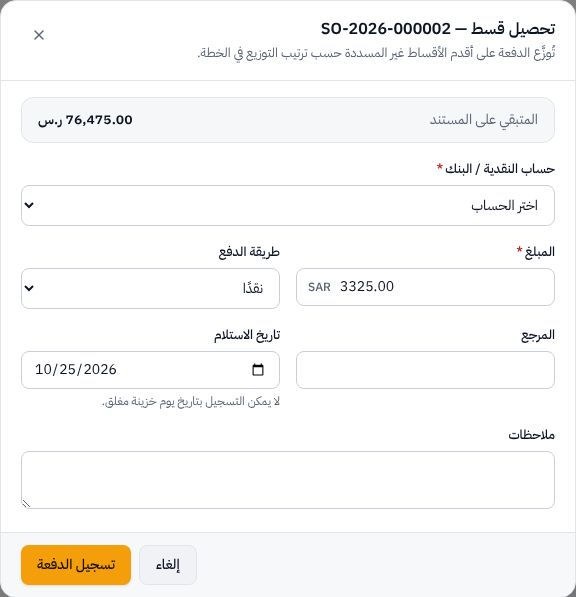
شكل 35: نافذة تحصيل قسط
QQ024QQالعمولات
«عرض جميع العمولات» أو «عرض عمولاتي» · الاعتماد: «اعتماد العمولات» · الصرف: «صرف العمولات»
تُحسب عمولة البائع تلقائيًا من سياسة العمولة المسندة إليه (انظر فصل الإعدادات)، وتمر بالحالات: متوقعة (عند تأكيد البيع) ← مستحقة (عند التسليم أو عند سداد كامل الثمن حسب السياسة) ← معتمدة ← مصروفة. وإذا أُلغي البيع أو أُرجع تُعكس العمولة («معكوسة»)، أو تُسترد من الموظف إن كانت قد صُرفت («مستردة من الموظف»).
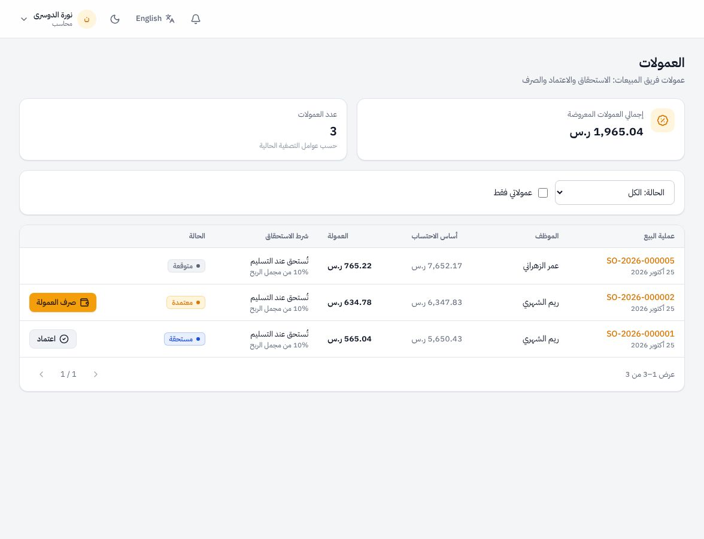
12
شكل 36: صفحة العمولات كما تراها المحاسبة
صرف العمولة: للعمولة المعتمدة؛ اختر حسابًا بالعملة الأساسية وطريقة الدفع وتاريخ الصرف.
تضم مجموعة العملاء في القائمة الجانبية: العملاء، الفرص البيعية، متابعاتي، المواعيد، طلبات السيارات، استفسارات المعرض.
من يرى أي عميل؟مندوب المبيعات يرى العملاء المسندين إليه والعملاء الذين أضافهم فقط. ومن يملك صلاحية «عرض عملاء جميع الموظفين» (مدير المبيعات، مدير الفرع، المحاسب) يرى كل عملاء فروعه.
البحث بالاسم أو الجوال أو البريد أو رقم الهوية الكامل، مع التصفية حسب نوع العميل (فرد/شركة) والفرع ومسؤول المبيعات والترتيب، وعملائي فقط. التبويبات: النشطون، غير النشطين، الكل.
يعرض الجدول لكل عميل نوعه وجواله ومسؤول المبيعات وعدد الفرص المفتوحة وآخر تواصل والفرع. اضغط على الاسم لفتح ملف العميل.
QQ027QQإضافة عميل وتعديله
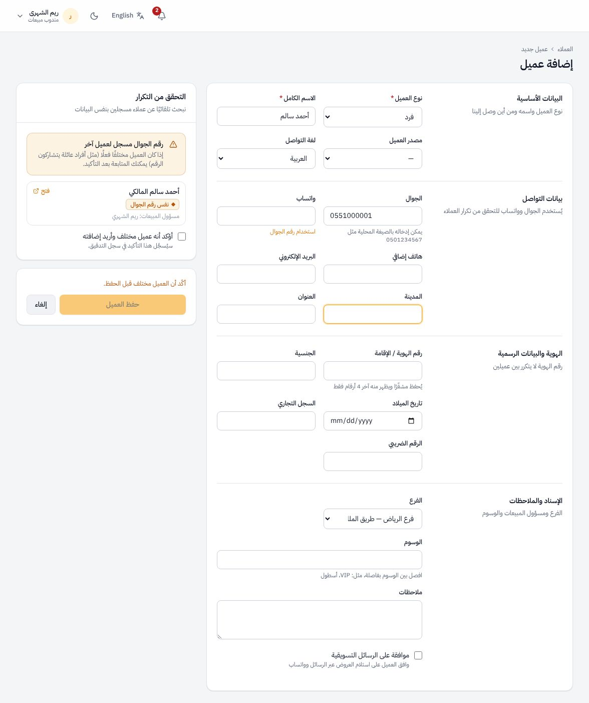
123
شكل 39: نموذج إضافة عميل
النموذج مقسم إلى أقسام:
البيانات الأساسية: نوع العميل (فرد أو شركة؛ للشركة يظهر اسم الشركة واسم الشخص المسؤول)، الاسم الكامل، مصدر العميل (زيارة المعرض، اتصال، واتساب، الموقع، المعرض الرقمي، توصية، وسائل التواصل، منصات الإعلانات، حملة، أخرى)، لغة التواصل.
بيانات التواصل: الجوال (يُقبل بالصيغة المحلية مثل 0501234567)، واتساب، هاتف إضافي، البريد، المدينة، العنوان.
الهوية والبيانات الرسمية: رقم الهوية / الإقامة (يُحفظ مشفّرًا ويظهر منه آخر 4 أرقام فقط، ولا يتكرر بين عميلين)، الجنسية، تاريخ الميلاد، السجل التجاري، الرقم الضريبي.
الإسناد والملاحظات: الفرع، مسؤول المبيعات (لمن يحق له الإسناد)، الوسوم (مثل VIP، أسطول)، ملاحظات، وموافقة على الرسائل التسويقية.
بطاقة التحقق من التكرار تبحث تلقائيًا أثناء الكتابة عن عملاء بالبيانات نفسها: إذا تطابق رقم الهوية يُمنع الحفظ ويُطلب فتح ملف العميل الموجود؛ وإذا تطابق الجوال فقط (كأفراد عائلة يتشاركون رقمًا) يمكنك المتابعة بعد تأكيد «أؤكد أنه عميل مختلف»، ويُسجَّل هذا التأكيد في سجل التدقيق.
QQ028QQملف العميل (العميل 360)
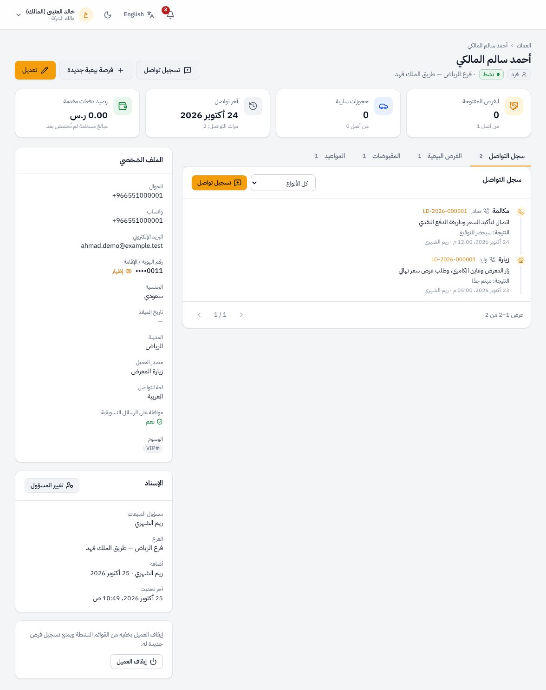
123456
شكل 40: ملف العميل: كل ما يخصه في صفحة واحدة
تسجيل تواصل: مكالمة أو واتساب أو زيارة… (انظر النافذة أدناه).
فرصة بيعية جديدة لهذا العميل.
تعديل بيانات العميل.
إظهار: يكشف رقم الهوية كاملًا لمن يملك صلاحية «عرض أرقام الهوية»؛ ويُسجَّل كل اطلاع في سجل التدقيق.
تغيير المسؤول (أو إسناد): ينقل العميل إلى مسؤول مبيعات آخر، ويصله تنبيه.
إيقاف العميل: يخفيه من القوائم النشطة ويمنع تسجيل فرص أو تواصل جديد له (يبقى سجله كاملًا ويمكن إعادة التفعيل). لا يمكن إيقاف عميل له حجز ساري.
البطاقات العلوية: الفرص المفتوحة، الحجوزات السارية، آخر تواصل وعدد مرات التواصل، ورصيد دفعات مقدمة (مبالغ مستلمة لم تُخصص بعد). والتبويبات: سجل التواصل (مع تصفية حسب النوع)، الفرص البيعية، الحجوزات، المقبوضات، المواعيد، طلبات السيارات.
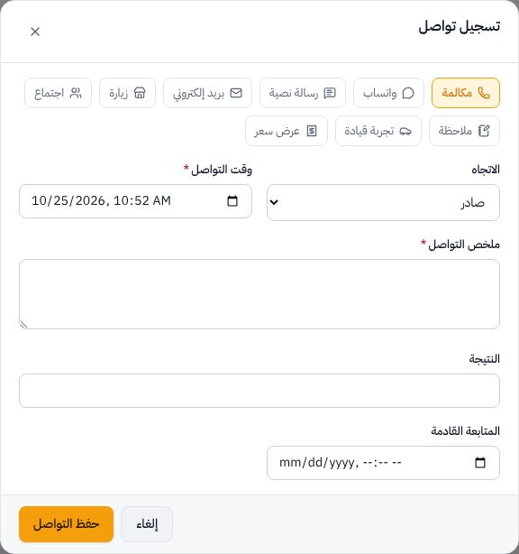
شكل 41: نافذة تسجيل تواصل
تسجيل تواصل: اختر نوع التواصل (مكالمة، واتساب، رسالة نصية، بريد، زيارة، اجتماع، ملاحظة، تجربة قيادة، عرض سعر) والاتجاه (وارد/صادر) ووقت التواصل (لا يقبل وقتًا مستقبليًا)، واكتب ملخص التواصل والنتيجة.
يمكن ربط التواصل بـفرصة بيعية وتحديد المتابعة القادمة فيتحدّث موعد متابعة الفرصة، أو اختيار «تمت المتابعة — إلغاء موعد المتابعة الحالي».
نصيحةسجّل كل اتصال فور انتهائه؛ هكذا يرى زملاؤك والمدير تاريخ العميل كاملًا إذا انتقل لمندوب آخر.
الفرصة البيعية هي اهتمام عميل محدد بالشراء: لها مصدر وميزانية وسيارة مطلوبة ومرحلة في مسار المبيعات. المراحل الافتراضية: جديد ← تم التواصل ← مؤهل ← تجربة قيادة ← تفاوض ← محجوز / عربون ← تم البيع (ربح) أو خسارة. لكل مرحلة احتمالية إغلاق، ويمكن تخصيصها من مراحل المبيعات في الإعدادات.
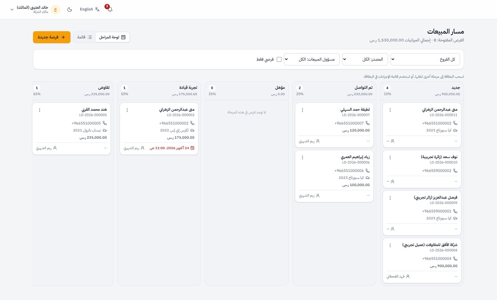
123
شكل 42: لوحة المراحل (Kanban)
فرصة جديدة: اختر العميل ثم تفاصيل اهتمامه (الفرع، المصدر، السيارة المطلوبة، الميزانية من/إلى، طريقة الدفع المفضلة، تاريخ الإغلاق المتوقع، موعد المتابعة، الاهتمامات). المندوب تُسند الفرصة إليه تلقائيًا.
طريقة العرض: لوحة المراحل أو قائمة (جدول قابل للبحث مع «متابعات مستحقة»).
السحب والإفلات: اسحب بطاقة الفرصة إلى عمود مرحلة أخرى لنقلها، أو استخدم قائمة الإجراءات (⋮) في البطاقة. تعرض رأس كل عمود عدد الفرص ومجموع الميزانيات والاحتمالية.
يمكن التصفية حسب الفرع والمصدر ومسؤول المبيعات وفرصي فقط. تظهر على البطاقة تاريخ المتابعة بالأحمر إذا تأخر.
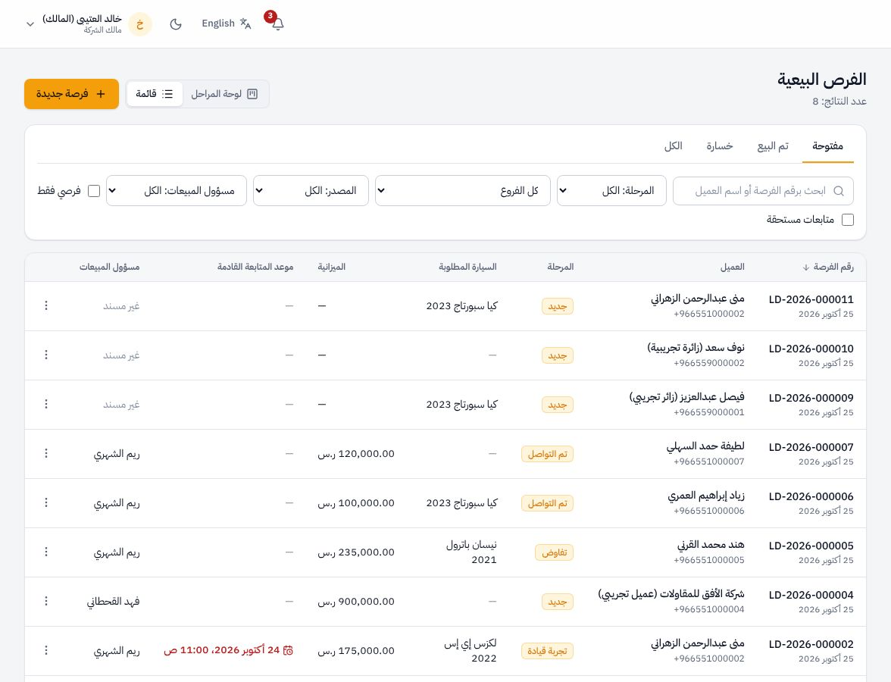
شكل 43: الفرص البيعية بعرض القائمة
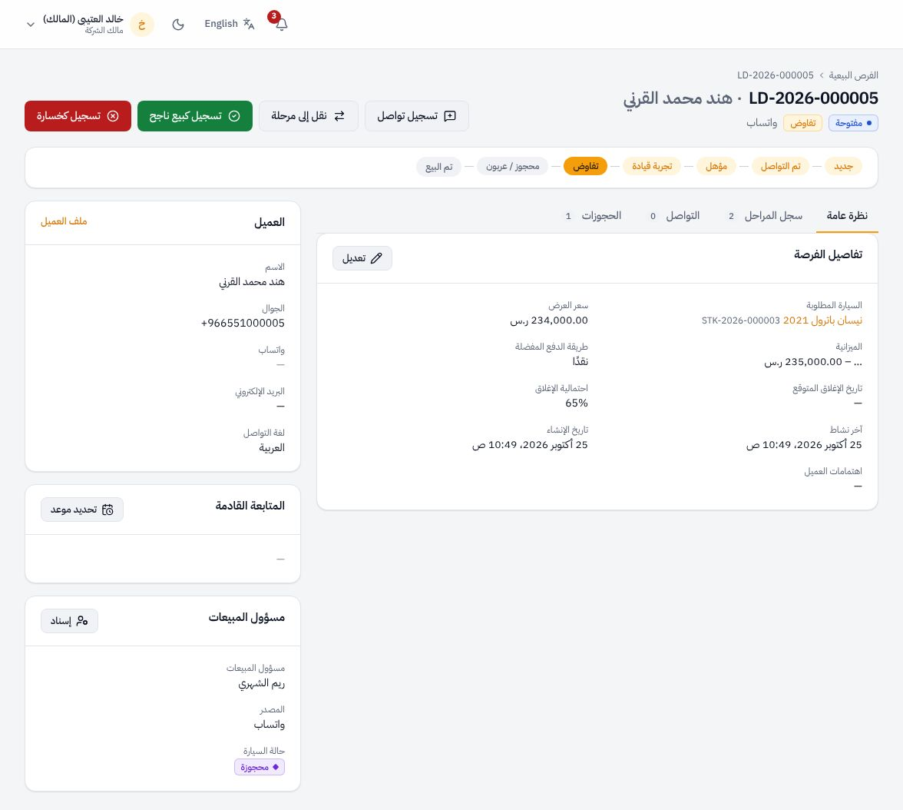
1234
شكل 44: صفحة الفرصة البيعية
نقل إلى مرحلة: اختيار مرحلة مفتوحة أخرى مع ملاحظة.
تسجيل كبيع ناجح: يغلق الفرصة كربح. (تُغلق تلقائيًا كربح عند تأكيد عملية بيع مرتبطة بها.)
تسجيل كخسارة: يطلب سبب الخسارة (السعر، اشترى من مكان آخر، رُفض التمويل، لا يرد، بيعت السيارة، غيّر رأيه، غير مؤهل، سبب آخر) وتفاصيل إضافية. يمكن لاحقًا إعادة فتح الفرصة ما لم ترتبط بعملية بيع.
تحديد موعد / إعادة الجدولة: موعد المتابعة القادمة.
شريط التقدّم أعلى الصفحة يبين موقع الفرصة في المسار. والتبويبات: نظرة عامة (مع تعديل)، سجل المراحل، التواصل، الحجوزات. وفي الجانب: بيانات العميل، والمتابعة القادمة، ومسؤول المبيعات مع زر إسناد، وحالة السيارة المطلوبة.
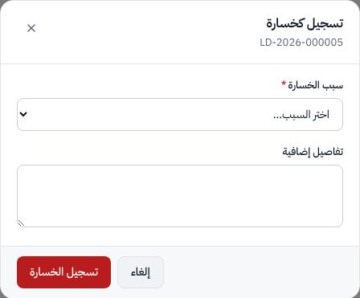
شكل 45: نافذة تسجيل الخسارة
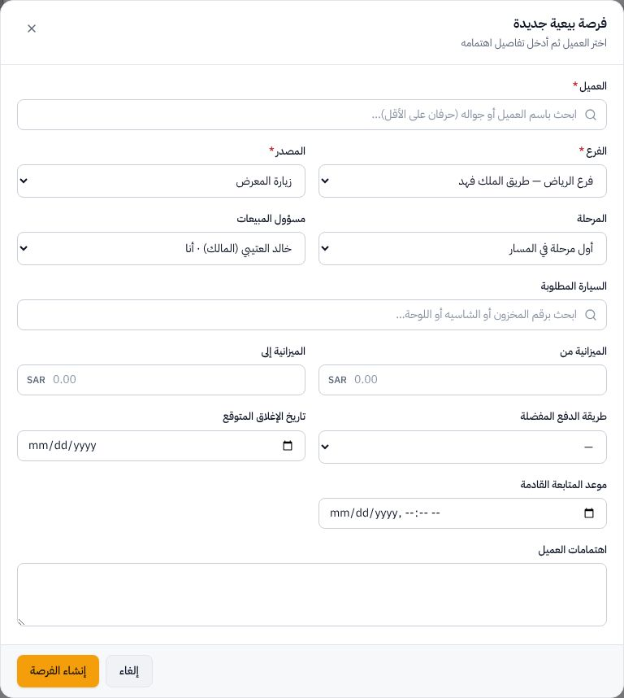
شكل 46: نافذة فرصة بيعية جديدة
QQ030QQمتابعاتي
لكل من يملك «عرض الفرص البيعية»؛ يعرض الفرص المسندة إليك فقط
قائمة عمل يومية بالفرص المسندة إليك والمستحقة المتابعة حتى نهاية اليوم، مقسمة إلى متأخرة ومستحقة اليوم. لكل فرصة زر تسجيل تواصل، وأزرار سريعة لتأجيل المتابعة: غدًا، بعد يومين، بعد 3 أيام، بعد أسبوع.
تجربة قيادة: موعد من نوع تجربة قيادة مع السيارة ورخصة السائق.
اليوم وسهما الفترة السابقة/التالية للتنقل في التقويم.
طريقة العرض: أسبوع أو يوم. والتصفية حسب الفرع والنوع والحالة، ومواعيدي فقط، وإظهار الملغاة.
الأوقات بتوقيت الشركة. انقر على خانة فارغة في التقويم لحجز موعد في ذلك الوقت. مواعيد الزملاء التي لا يحق لك رؤية تفاصيلها تظهر مخططة باسم «مشغول».
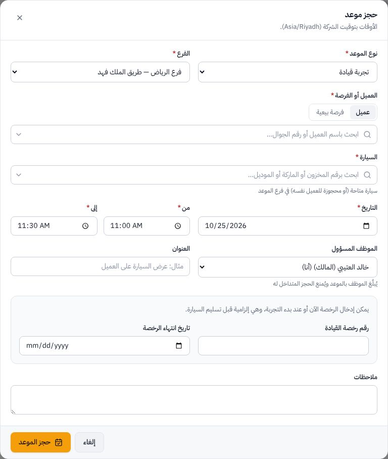
شكل 49: نافذة حجز تجربة قيادة
حقول الموعد: نوع الموعد، الفرع، العميل أو الفرصة (بتبديل «عميل / فرصة بيعية»؛ مع الفرصة يُستخدم عميلها)، السيارة، التاريخ، من/إلى، الموظف المسؤول (يُبلَّغ بالموعد ويُمنع الحجز المتداخل له)، العنوان، الملاحظات.
تجربة القيادة تتطلب عميلًا وسيارة متاحة (أو محجوزة للعميل نفسه) في فرع الموعد، ولا تتداخل مع تجربة أخرى للسيارة نفسها. يمكن إدخال رقم رخصة القيادة وتاريخ انتهائها الآن أو عند بدء التجربة، وهي إلزامية قبل تسليم المفتاح، ويُرفض الحجز إذا كانت الرخصة تنتهي قبل الموعد. لا يمكن حجز موعد في وقت مضى، وأقصى مدة 12 ساعة.
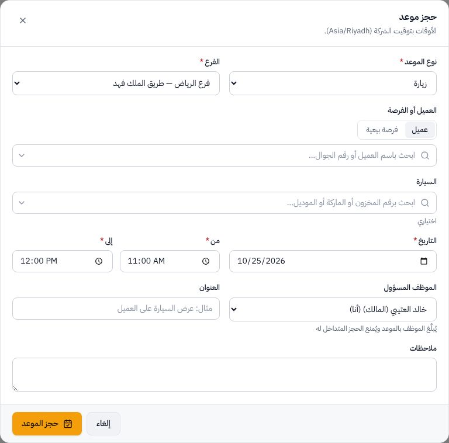
شكل 50: نافذة حجز موعد (زيارة)
صفحة الموعد وإجراءاته
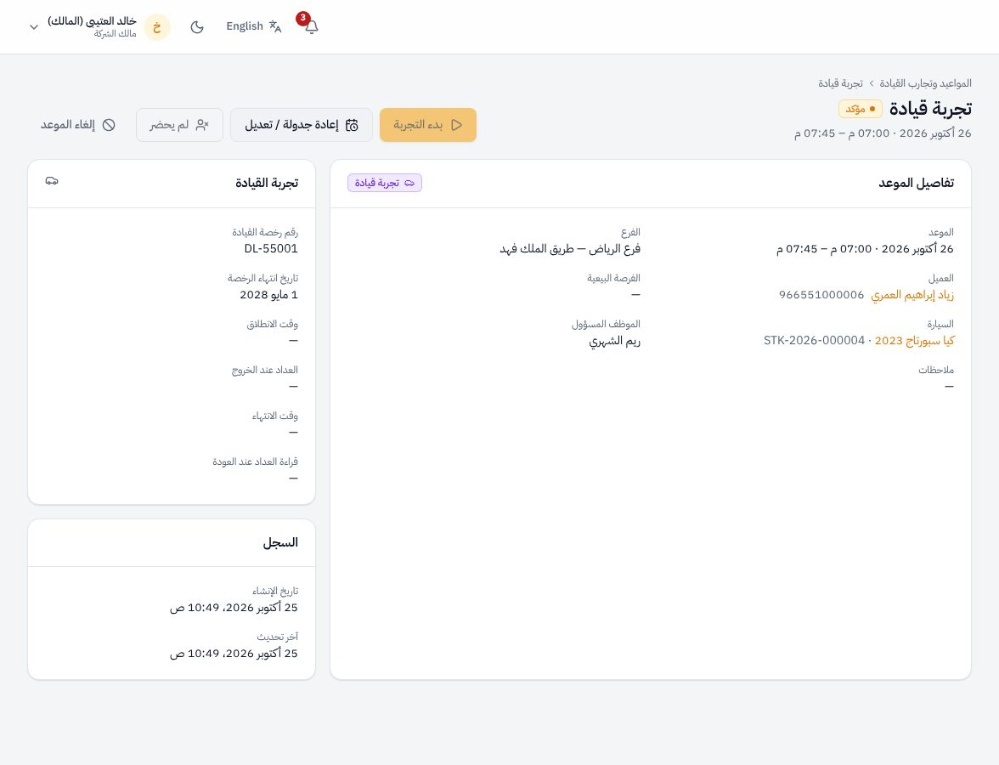
1234
شكل 51: تجربة قيادة مؤكدة لم تبدأ بعد
بدء التجربة: يُتاح قبل الموعد بـ30 دقيقة كحد أقصى. يطلب قراءة العداد عند الخروج (لا تقل عن آخر قراءة للسيارة) والتحقق من الرخصة، ثم تسليم السيارة وبدء التجربة.
إعادة جدولة / تعديل: تغيير الوقت يعيد الموعد إلى «مجدول» حتى يُؤكَّد مع العميل مجددًا.
لم يحضر: بعد وقت بدء الموعد؛ يُضاف إلى سجل العميل.
إلغاء الموعد: مع السبب.
وللمواعيد غير التجارب: تأكيد الموعد (بعد تأكيد العميل حضوره) وإتمام الموعد. عند عودة السيارة من التجربة اضغط إنهاء التجربة وسجّل قراءة العداد عند العودة والنتيجة (انطباع العميل والخطوة التالية)؛ تُحسب المسافة المقطوعة وتُضاف التجربة إلى سجل تواصل العميل وقراءات عداد السيارة.
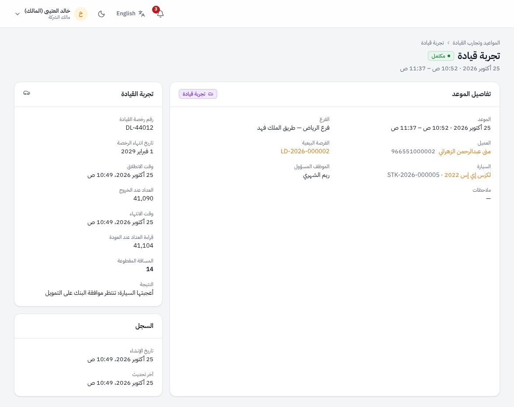
شكل 52: تجربة قيادة مكتملة: العداد عند الخروج والعودة والمسافة والنتيجة
QQ032QQطلبات السيارات (رغبات العملاء)
العرض: «عرض العملاء» · الإضافة: «إدارة العملاء»
عندما يبحث عميل عن سيارة غير موجودة في المخزون، سجّل طلب سيارة بمواصفاتها: الماركة، الموديل، سنة الصنع من/إلى، أقصى سعر، أقصى عدد كيلومترات، نوع الهيكل، الوقود، ناقل الحركة، اللون، وتاريخ انتهاء الطلب (اختياري). يجب تحديد معيار واحد على الأقل. يتحقق النظام دوريًا من السيارات الجديدة المتاحة ويُبلغ مسؤول العميل فور وجود سيارة مطابقة.
شكل 53: نموذج طلب سيارة جديدشكل 54: قائمة طلبات العملاء للسيارات
1234
شكل 55: طلب سيارة مع السيارة المطابقة له
تحقق من التطابق: يعرض جدولًا بكل معيار والمطلوب والنتيجة (مطابق / غير مطابق). وفي بطاقة «فحص سيارة من المخزون» يمكن البحث عن أي سيارة لمعرفة سبب عدم مطابقتها.
استبعاد: يخفي سيارة من المطابقات النشطة لهذا الطلب (يبقى السجل محفوظًا).
تم التنفيذ: يسجّل أن العميل حصل على السيارة، مع ربط السيارة التي اشتراها اختياريًا.
إلغاء الطلب: لن يُطابَق مع السيارات الجديدة بعده.
ويظهر في صفحة كل سيارة تبويب عملاء مهتمون بالعملاء الذين تطابق طلباتهم النشطة هذه السيارة، للتواصل معهم.
QQ033QQاستفسارات المعرض
لمن يملك «توزيع الفرص البيعية»
تصل هنا الاستفسارات وطلبات تجربة القيادة التي يرسلها الزوار من صفحة المعرض الرقمي العامة. ينشئ النظام تلقائيًا لكل استفسار عميلًا (أو يستخدم العميل الموجود بنفس الجوال) وفرصة بيعية بمصدر «المعرض الرقمي»، ويرسل تنبيهًا.
12
شكل 56: صفحة استفسارات المعرض
التبويبات: الكل، تحتاج مراجعة (لم يُربط تلقائيًا، مثلًا لأن الجوال يطابق أكثر من عميل أو يخص عميلًا موقوفًا؛ اربطه يدويًا بـالبحث عن العميل)، مرتبطة بفرصة بيعية.
فتح الفرصة البيعية وملف العميل للمتابعة.
تنبيهبيانات التواصل في الاستفسارات يكتبها الزائر بنفسه ولم يتم التحقق منها. الطلب المكرر من نفس الرقم لنفس السيارة خلال 24 ساعة يُضاف إلى السجل الأول.
QQ034QQالمخزونالسيارات وملف السيارة 360، الفحص الفني، نقل السيارات، الجرد، أوامر العمل، المخزون الراكد
تضم مجموعة المخزون: السيارات، نقل السيارات، الجرد، أوامر العمل، توصيات المخزون الراكد.
QQ035QQقائمة السيارات
العرض: «عرض السيارات» · الإضافة: «إضافة سيارات» · التكلفة والربح تظهر لمن يملك «عرض التكلفة والربح»
1234
شكل 57: قائمة السيارات بالعرض الشبكي
إضافة سيارة: إضافة سيارة مباشرة (لسيارة مشتراة من مورد استخدم «عمليات الشراء» بدلًا منها لتُسجَّل تكلفتها).
البحث برقم المخزون أو الشاسيه أو اللوحة أو الماركة أو الموديل.
النطاق: في المخزون (غير المسلَّمة وغير المستبعدة)، المباعة، الكل. ومع التصفية: الحالة، والترتيب (الأحدث دخولًا، الأقدم في المخزون، السعر، سنة الصنع)، وزر التصفية لمزيد من المعايير: الفرع، الماركة، سنة الصنع من/إلى، السعر من/إلى، الوقود، ناقل الحركة، نوع الهيكل، والراكدة (تنبيه/حرجة).
التبديل بين عرض شبكي (بطاقات بالصورة الرئيسية) وعرض جدولي.
تعرض كل بطاقة الحالة، والاسم والفئة، ورقم المخزون، والعداد، وأيام في المخزون، والسعر (أو «بدون سعر»)، والفرع.
شكل 58: قائمة السيارات بالعرض الجدولي
QQ036QQإضافة سيارة وتعديلها
شكل 59: نموذج إضافة سيارة (الأقسام الأولى)
أقسام النموذج:
البيانات الأساسية: الفرع، الحالة (جديدة / مستعملة / مستعملة معتمدة)، الماركة والموديل (زر + لإضافة ماركة أو موديل غير موجود في الكتالوج)، الفئة، سنة الصنع، رقم الشاسيه (VIN) مع زر فك رقم الهيكل (إذا فُعّل التكامل؛ يقترح الماركة والموديل والسنة من قاعدة بيانات أمريكية)، وخيار «رقم شاسيه غير قياسي» للسيارات القديمة أو المحلية، ورقم المحرك. ينبّه النظام إذا كانت خانة التحقق في رقم الشاسيه لا تتطابق، ويرفض رقمًا موجودًا لسيارة أخرى في المخزون.
التسجيل واللوحة: رقم اللوحة، جهة/إمارة اللوحة، سنة التسجيل.
المواصفات الفنية: نوع الهيكل، الوقود، ناقل الحركة، نظام الدفع، سعة المحرك، السلندرات، القوة الحصانية، الأبواب، المقاعد، اللون الخارجي والداخلي.
العداد والمنشأ: قراءة العداد ووحدته (كم/ميل)، المواصفات (خليجي، وكالة محلية، أمريكي…)، بلد المنشأ.
الملكية والمستندات والضمان: حالة الملكية (ملك المعرض، أمانة/عمولة، بانتظار نقل الملكية، ممولة)، حالة المستندات، نوع الضمان (يظهر عنوان هذا الحقل في النسخة الحالية بنص تقني «vehicles.warrantyType» بدل اسمه العربي)، الضمان حتى، تاريخ الاستحواذ، الحالة المبدئية.
الموقع والملاحظات: الموقع داخل المعرض (مثل «صف C-6»)، وملاحظات داخلية لا تظهر للعملاء.
الكماليات: اختر بالضغط على الأزرار (الراحة، الأمان، التقنية، الخارجية، الداخلية…).
QQ037QQملف السيارة (السيارة 360)
كل ما يخص السيارة في صفحة واحدة: البيانات، الصور، المستندات، الفحوصات، الأسعار، السجل، التكاليف، أوامر العمل، الحجز، العملاء المهتمون، المبيعات، إعلان المعرض.
123456
شكل 60: ملف السيارة — تبويب «نظرة عامة»
تعديل: تعديل بيانات السيارة (لا يمكن التعديل بعد البيع أو التسليم أو الاستبعاد).
تغيير الحالة: يعرض فقط الحالات المسموح الانتقال إليها يدويًا من الحالة الحالية؛ والاستبعاد من المخزون يتطلب سببًا وصلاحية خاصة.
نقل لفرع آخر: يبدأ عملية نقل إلى فرع آخر (لا يمكن نقل سيارة محجوزة أو مباعة).
بدء فحص: يفتح فحصًا فنيًا جديدًا (انظر «الفحص الفني»).
التبويبات: يظهر منها ما تسمح به صلاحياتك.
في رأس الصفحة: الحالة، وسعر العرض، والعداد (مع رابط تعديل لتسجيل قراءة عداد جديدة؛ القراءة الأقل من السابقة تتطلب ذكر السبب)، وأيام في المخزون، ورقم المخزون، والفرع والموقع، ورقم الشاسيه. وتعرض «نظرة عامة» المواصفات الفنية والملكية والضمان وقراءات العداد والكماليات.
شكل 61: نافذة تغيير الحالةشكل 62: نافذة نقل السيارة
شكل 63: نافذة تسعير السيارة
متى تصبح السيارة «متاحة للبيع»؟إذا كان إعداد «إلزام الفحص قبل العرض للبيع» مفعلًا، يرفض النظام جعلها متاحة قبل اعتماد فحص لها. والحجز والبيع والتسليم والإرجاع لا تُضبط من هذه النافذة؛ تضعها عملياتها فقط.
تبويبات ملف السيارة
الصور والفيديو: اسحب الملفات أو اضغط رفع صور أو فيديو (JPG، PNG، WEBP، MP4، MOV) مع اختيار التصنيف (عام، ضرر، فحص، قبل الإصلاح، بعد الإصلاح، مستند). لكل صورة: تعيين كرئيسية، وظاهرة للعملاء / داخلية (صور التصنيف «عام» فقط يمكن إظهارها في المعرض الرقمي)، وتقديم/تأخير الترتيب، والحذف. تُزال بيانات الموقع الجغرافي من الصور تلقائيًا عند الرفع.
شكل 64: تبويب الصور والفيديو
المستندات: إضافة مستند (ملكية، استمارة/رخصة، تأمين، فحص دوري، جمارك، عقد شراء، سجل صيانة، ضمان، أخرى) مع رقم المستند وتاريخي الإصدار والانتهاء والملف (PDF أو صورة). يمكن تمييز المستند بأنه حساس فلا يراه إلا من يملك صلاحية «الاطلاع على المستندات الحساسة». تظهر حالة الصلاحية: ساري، ينتهي قريبًا، منتهي. الحذف يتطلب ذكر السبب.
شكل 65: تبويب المستنداتشكل 66: تبويب السجل: تاريخ حالات السيارة
الفحص: كل الفحوصات السابقة برقمها ونوعها ونتيجتها والفاحص، مع زر لبدء أو متابعة الفحص.
التسعير: الأسعار الحالية وسجل الأسعار (كل تغيير بقيمته السابقة والجديدة ومن غيّره والسبب).
شكل 67: تبويب التسعير وسجل الأسعار
السجل: تسلسل زمني لكل تغيير في حالة السيارة ومصدره (الشراء، الفحص، البيع، التسليم، النقل…).
التكاليف (صلاحية «عرض تكاليف السيارات»):
شكل 68: تبويب التكاليف: إجمالي التكلفة والربح المتوقع وبنود التكلفة
بطاقات: إجمالي التكلفة المرحّلة، بانتظار الاعتماد (لا تدخل في التكلفة حتى تُعتمد)، سعر الشراء، تكاليف إضافية، وتكاليف بعد البيع.
التكلفة حسب البند ونسبتها، والربح المتوقع عند سعر العرض (الصافي قبل الضريبة − التكلفة المرحّلة = مجمل الربح وهامشه). هذا تقدير مبني على التكاليف المرحّلة حتى الآن.
جدول بنود التكلفة: البند، البيان، المورد، المبلغ (وبالعملة الأساسية)، الحالة (بانتظار الاعتماد، مرحّلة، معكوسة، مرفوضة)، السداد (مدفوع/متبقٍ)، والإجراءات: اعتماد ورفض للبنود المعلّقة، وعكس القيد للمرحّلة (سعر الشراء لا يُعكس هنا بل بإلغاء عملية الشراء؛ والبند المسدَّد يلزم إلغاء دفعته أولًا).
إضافة تكلفة وتوزيع تكلفة مشتركة.
شكل 69: نافذة إضافة تكلفة للسيارة
إضافة تكلفة: بند التكلفة (نقل، صيانة، قطع غيار، سمكرة، تلميع، جمارك، تسجيل…)، تاريخ التكلفة، البيان، المبلغ والعملة (مع سعر الصرف للعملة الأجنبية)، المورد (اتركه فارغًا للمشتريات المباشرة)، ملاحظات، وسداد فوري من خزينة أو حساب بنكي بالعملة الأساسية.
إذا كنت تملك صلاحية اعتماد التكاليف تُرحَّل التكلفة مباشرة، وإلا تُرسل للاعتماد ولا تُحتسب قبل اعتمادها.
الأثر المحاسبيتكلفة قبل البيع: مدين مخزون السيارات (1300) / دائن ذمم الموردين (2000)، فتزيد تكلفة السيارة. وبعد الاعتراف ببيع السيارة تُحمَّل على تكلفة المبيعات (5000) وتتطلب صلاحية «ترحيل تكاليف بعد البيع».
أوامر العمل: أوامر العمل الخاصة بالسيارة. الحجز: الحجز الحالي وسجل الحجوزات وزر حجز لعميل للسيارة المتاحة. عملاء مهتمون: عملاء لديهم طلبات سيارات تطابق هذه السيارة. المبيعات: عمليات بيع السيارة وزر بيع هذه السيارة. إعلان المعرض: محتوى إعلان المعرض الرقمي ونشره (انظر فصل «المعرض الرقمي»).
شكل 70: تبويب الحجز لسيارة محجوزةشكل 71: تبويب العملاء المهتمين
يُبدأ الفحص من زر بدء فحص في ملف السيارة (نوع الفحص: فحص شراء، قبل البيع، دوري، استبدال، مرتجع، أخرى)، ولا يمكن فتح فحصين في الوقت نفسه للسيارة. يفتح نموذج فحص مبني على قالب البنود القياسي:
شكل 72: صفحة الفحص الفني أثناء التنفيذ
شريط التقدم: عدد البنود المفحوصة من الإجمالي، وتنبيه بعدد البنود الإلزامية (المعلّمة بنجمة) التي لم تُفحص.
البنود مقسمة حسب الأقسام (المحرك، ناقل الحركة، التبريد، التعليق والتوجيه، الفرامل، الكهرباء…). لكل بند: سليم، ملاحظة، عطل، لا ينطبق، مع الخطورة والملاحظات، وحقل القياس لبعض البنود (مثل ضغط الإطارات أو سماكة الفحمات) مع خيار «تقدير الفني» أو قياس فعلي بجهاز.
مخطط الهيكل: اضغط على أي جزء من السيارة لتحديد حالته: فابريكا، إعادة دهان، معجون، إصلاح، ضرر، مُستبدل، خدوش، صدمة/طعجة، مع سماكة الطلاء بالميكرون.
صور توثيقية: إضافة صورة لتوثيق الملاحظات.
أسفل الصفحة: النتيجة العامة (ناجح، ناجح مع ملاحظات، غير ناجح)، الملخص، التوصيات، الحوادث والإصلاحات المعروفة، وقراءة العداد.
الأزرار: حفظ المسودة للمتابعة لاحقًا، واعتماد الفحص (بعد الاعتماد لا يمكن تعديله؛ يمكن إجراء فحص جديد لاحقًا)، وإلغاء الفحص.
قواعد الاعتمادلا يُعتمد الفحص قبل فحص كل البنود الإلزامية، ولا يمكن اعتماده «ناجحًا» وفيه عطل حرج. والنتائج تعكس ملاحظات الفاحص والقياسات المسجّلة فقط ولا تمثل نسبة دقيقة لسلامة السيارة.
QQ039QQنقل السيارات بين الفروع
العرض: «عرض السيارات» · النقل: «نقل السيارات بين الفروع»
تُبدأ عملية النقل من زر نقل لفرع آخر في ملف السيارة، فتبقى السيارة «قيد النقل» حتى يؤكد الفرع المستلم وصولها. صفحة نقل السيارات تعرض العمليات بتبويبات: قيد النقل، تم الاستلام، ملغي، الكل.
12
شكل 73: عمليات نقل السيارات
تأكيد الاستلام: عند وصول السيارة؛ تنتقل إلى الفرع الجديد.
إلغاء النقل: تبقى السيارة في فرعها الأصلي.
أثناء النقل لا يمكن حجز السيارة أو بيعها أو تسجيل شراء عليها.
يقارن الجرد السيارات المسجّلة في فرع بما هو موجود فعلًا في الساحة. اضغط بدء جرد جديد في صفحة الجرد واختر الفرع.
123
شكل 74: جرد مفتوح: بطاقات الملخص وخانة المسح وقائمة السيارات
خانة المسح: امسح الباركود أو اكتب رقم الشاسيه أو رقم المخزون أو اللوحة، مع الموقع داخل المعرض اختياريًا.
تسجيل: يظهر «تم العثور على السيارة ✓»، أو «السيارة مسجّلة في فرع آخر»، أو «الرقم غير معروف في النظام — سُجّل كفرق».
إنهاء الجرد: ينقله إلى «بانتظار التسوية».
البطاقات: متوقعة، موجودة، مفقودة، غير متوقعة، لم تُمسح. بعد الإنهاء تُختار لكل فرق القرار: تأكيد، تحديث الموقع، قيد التحقيق، شطب من المخزون (للمفقودة فقط؛ يُرحَّل باقي تكلفتها مصروف تسويات 6300)، تسجيل ملاحظة؛ ثم تسوية الفروقات.
أمر العمل يسجّل أعمال الورشة والتجهيز على سيارة (فحص، إصلاح، صيانة، تلميع وتجهيز، قطع غيار، سمكرة ودهان) وتكاليفها، ويرحّلها على تكلفة السيارة عند اعتماده.
شكل 75: قائمة أوامر العمل
دورة الأمر: مفتوح ← بدء العمل ← قيد التنفيذ ← إنهاء وإرسال للاعتماد ← بانتظار الاعتماد ← اعتماد وترحيل التكاليف ← مكتمل ومعتمد. ويمكن للمعتمد إعادة للتنفيذ مع السبب، أو إلغاء الأمر قبل الاعتماد.
123
شكل 76: أمر عمل قيد التنفيذ
إضافة بند: النوع (قطعة غيار، أجرة عمل، خدمة، أخرى)، بند التكلفة، البيان، الكمية، سعر الوحدة، الساعات، المورد (إن تُرك فارغًا يُستخدم مورد أمر العمل، أو يُعتبر شراءً مباشرًا). الإجمالي = الكمية × سعر الوحدة. يمكن تعديل البنود وحذفها حتى الإرسال للاعتماد.
إنهاء وإرسال للاعتماد: يتطلب بندًا واحدًا على الأقل.
إلغاء الأمر: لا تُرحَّل أي تكاليف.
يعرض الملخص المالي إجمالي البنود والتقدير والفرق عنه، ثم بعد الاعتماد: المرحّل كتكلفة والمدفوع والمتبقي للموردين.
شكل 77: نافذة إضافة بند
شكل 78: نافذة اعتماد أمر العمل
الأثر المحاسبيعند الاعتماد يتحول كل بند قيمته أكبر من صفر إلى تكلفة مرحّلة على السيارة (من حـ/ المخزون إلى حـ/ الموردين). خيار سداد البنود المباشرة فورًا يسدد البنود التي ليس لها مورد من خزينة بالعملة الأساسية؛ أما بنود الموردين فتبقى مستحقة وتُسدَّد من «مدفوعات الموردين».
QQ042QQتوصيات المخزون الراكد
لمن يملك «تعديل سعر العرض»
تعرض السيارات غير المباعة الموجودة في المخزون منذ حد الركود (60 يومًا افتراضيًا) أو أكثر، وتُعدّ حرجة بعد الحد الحرج (90 يومًا). الحدود تُعدَّل من إعدادات الشركة (رابط تعديل الحدود).
شكل 79: توصيات المخزون الراكد
البطاقات: سيارات راكدة، حرجة، بدون سعر عرض، غير منشورة. ولكل سيارة توصيات مبنية على قواعد ثابتة ومبيعات شركتك فقط (وليست بيانات سوق) مع رابط مباشر للإجراء: حدّد سعر عرض، انشرها في المعرض الرقمي، أضف صورًا عامة (3 على الأقل)، راجع السعر (إذا كان أعلى من وسيط 3 مبيعات مماثلة على الأقل).
QQ043QQالمشترياتشراء السيارات، الموردون، مستحقات الموردين، مدفوعات الموردين، توزيع التكاليف المشتركة
تضم مجموعة المشتريات: عمليات الشراء، الموردون، مستحقات الموردين، مدفوعات الموردين، توزيع التكاليف المشتركة.
QQ044QQعمليات الشراء
العرض: «عرض عمليات الشراء» · الإنشاء: «إنشاء عمليات شراء» + «إضافة سيارات» · الاعتماد: «اعتماد عمليات الشراء» · الإلغاء: «إلغاء عمليات الشراء»
عملية الشراء هي الطريقة الصحيحة لإدخال سيارة مشتراة إلى المخزون: تُنشئ السيارة وتربطها بالمورد، وعند اعتمادها تُرحَّل قيمة الشراء إلى تكلفة السيارة وتصبح مستحقة السداد للمورد.
1
شكل 80: قائمة عمليات الشراء
يعرض الجدول رقم العملية والسيارة والمورد وسعر الشراء والقيمة بالعملة الأساسية والمسدَّد / المتبقي والحالة (مسودة، بانتظار الاعتماد، معتمدة، ملغاة). اضغط شراء سيارة لعملية جديدة.
نموذج «شراء سيارة»
شكل 81: نموذج شراء سيارة
بيانات الشراء: الفرع، المورد (بحث، أو زر + لإضافة مورد جديد)، مصدر الشراء (فرد، شركة، مزاد، استيراد، استبدال من عميل، أخرى)، تاريخ الشراء، سعر الشراء، العملة (وعند اختيار عملة أجنبية يظهر سعر الصرف والمعادل بالعملة الأساسية)، طريقة السداد المتفق عليها، تاريخ الاستحقاق (متى يجب السداد للمورد؛ يُستخدم في أعمار المستحقات)، ملاحظات.
بيانات السيارة: الماركة، الموديل، الفئة، سنة الصنع، رقم الشاسيه، قراءة العداد ووحدته، رقم اللوحة، الألوان، المواصفات، حالة السيارة. تُنشأ السيارة في المخزون بحالة «واردة حديثًا» (قيد الوصول) وتُكمَّل باقي بياناتها من ملف السيارة.
الاعتماد: خيار إرسال للاعتماد مباشرة؛ وإلا تُحفظ مسودة يمكن تعديلها ثم إرسال للاعتماد لاحقًا.
صفحة عملية الشراء والاعتماد
123
شكل 82: عملية شراء بانتظار الاعتماد كما يراها المالك
اعتماد: يفتح نافذة الاعتماد (أدناه).
رفض: تعود العملية مسودة مع سبب الرفض ليعدّلها المنشئ ويعيد إرسالها.
إلغاء الشراء: تُلغى العملية وتُستبعد السيارة من المخزون؛ وإن كانت معتمدة يُعكس قيد تكلفة الشراء (بشرط ألا تكون السيارة محجوزة أو مباعة، وألا توجد دفعات للمورد عليها). لا يمكن التراجع عن الإلغاء.
البطاقات: سعر الشراء، القيمة بالعملة الأساسية، المسدَّد، المتبقي. ثم بيانات الشراء، والسيارة (فتح ملف السيارة)، والمورد (فتح ملف المورد)، ونقل الملكية (لم يبدأ / قيد النقل / مكتمل لمتابعة نقل ملكية السيارة باسم المعرض)، والدفعات الموزّعة على العملية، وسجل العملية. تعديل عملية بانتظار الاعتماد يسحب طلب الاعتماد ويعيدها مسودة.
شكل 83: نافذة اعتماد عملية الشراء
في نافذة الاعتماد: ملاحظة اختيارية، وخيار سداد القيمة كاملة الآن (يتطلب صلاحية «سداد الموردين» وحسابًا بالعملة الأساسية) فيصبح الزر اعتماد وسداد.
الأثر المحاسبيعند الاعتماد: مدين مخزون السيارات (1300) / دائن ذمم الموردين (2000) بقيمة الشراء بالعملة الأساسية. ومع السداد الفوري تُسجَّل دفعة مورد من الخزينة.
فصل المهاممن أنشأ عملية الشراء أو عدّلها أو أرسلها لا يرى زر الاعتماد؛ يعتمدها مستخدم آخر (مثلًا مدير الفرع أو المالك).
شكل 84: العملية نفسها كما يراها منشئها: لا يوجد زر اعتماد
الموردون هم كل من تشتري منه أو تدفع له: معارض وتجار، أفراد، مزادات، مستوردون، ورش، شركات نقل، ملاك عقارات… اضغط إضافة مورد وأدخل النوع والاسم والهاتف والبريد والرقم الضريبي ورقم الهوية/السجل (يُحفظ مشفّرًا ويظهر منه آخر 4 خانات) والمدينة والعنوان. ينبّه النظام إذا وُجد مورد ببيانات مطابقة.
شكل 85: نافذة إضافة مورد
1
شكل 86: قائمة الموردين
شكل 87: ملف المورد: الرصيد المستحق وإجمالي المشتريات والمسدَّد
في ملف المورد أزرار: تعديل، إيقاف المورد (لا يظهر عند تسجيل مشتريات جديدة، وتبقى مستحقاته قابلة للسداد)، شراء سيارة، دفعة جديدة لمورد. والتبويبات: البيانات، المستندات المفتوحة (غير المسدَّدة)، عمليات الشراء، الدفعات، كشف الحساب.
شكل 88: كشف حساب المورد من دفتر الأستاذ
كشف الحساب مأخوذ من حساب الموردين (2000) في دفتر الأستاذ: الرصيد الافتتاحي، ثم كل حركة (شراء، تكلفة، مصروف، دفعة) بمدينها ودائنها والرصيد الجاري، ثم الرصيد الختامي = المستحق للمورد. اترك التاريخين فارغين لعرض كل الحركات. يتطلب الكشف صلاحية الوصول إلى كل الفروع.
QQ046QQمستحقات الموردين
«سداد الموردين»، أو «عرض الموردين» مع «عرض المدفوعات»شكل 89: المستندات المفتوحة: كل ما هو معتمد ولم يُسدَّد بالكامل
تبويب المستندات المفتوحة يجمع عمليات الشراء وتكاليف السيارات والمصروفات المعتمدة غير المسدَّدة، الأقدم استحقاقًا أولًا، مع إجمالي المتبقي والمتأخر وعدد أيام التأخير، وزر سداد لكل مستند يفتح نموذج الدفعة مع اختيار المستند. يمكن التصفية حسب المورد ونوع المستند.
شكل 90: أعمار المستحقات والمطابقة مع دفتر الأستاذ
تبويب أعمار المستحقات يوزّع المتبقي لكل مورد على فئات: غير مستحق، 1–30، 31–60، 61–90، أكثر من 90 يومًا، «كما في تاريخ» تختاره (العمر من تاريخ الاستحقاق، أو من تاريخ المستند إن لم يُحدَّد)، ثم يطابق الإجمالي مع حساب الموردين 2000 في الأستاذ العام: متطابق أو يوجد فرق.
صفحة مدفوعات الموردين تعرض الدفعات الصادرة وحالتها (مرحَّلة / ملغاة). اضغط دفعة جديدة لمورد:
شكل 91: نموذج دفعة جديدة لمورد
المستفيد والحساب: المورد (أو «مشتريات مباشرة (دون مورد)» لتكاليف ومصروفات سُجّلت بلا مورد)، الحساب (خزينة أو بنك) مع رصيده الحالي، تاريخ الدفع، طريقة الدفع، المرجع (رقم الحوالة أو الشيك).
المبلغ بعملة الحساب (يُحوَّل إلى العملة الأساسية).
التوزيع على المستندات: تظهر مستندات المورد المفتوحة؛ حدّد ما يُسدَّد من كل منها، أو استخدم توزيع تلقائي (الأقدم أولًا) واجعل المبلغ = مجموع التوزيع. يجب أن يساوي مجموع التوزيع مبلغ الدفعة بالعملة الأساسية تمامًا، ويظهر أسفل النموذج: الدفعة، الموزَّع، الفرق.
لمستند بعملة أجنبية يمكن إدخال «المسدَّد بعملة المستند»؛ ويُرحَّل الفرق بين المدفوع والمخصوم من الرصيد إلى فروق العملة (ربح أو خسارة).
تسجيل الدفعة. ولا يسمح النظام بسحب الخزينة النقدية على المكشوف («رصيد الصندوق لا يكفي»).
الأثر المحاسبيمدين ذمم الموردين (2000) / دائن النقدية والبنوك (1100)، ويُسجَّل خروج المبلغ في دفتر الخزينة. إلغاء الدفعة من صفحتها يعيد المبلغ إلى الحساب بقيد عكسي بتاريخ اليوم، وتعود المستندات مستحقة السداد.
شكل 92: قائمة مدفوعات الموردين
QQ048QQتوزيع التكاليف المشتركة
«تسجيل تكاليف السيارات»
عندما تصل فاتورة واحدة تخص عدة سيارات (شحن أو تخليص أو نقل)، وزّعها عليها بدقة حتى آخر وحدة نقدية بدل إدخالها يدويًا لكل سيارة:
شكل 93: صفحة توزيع تكلفة مشتركة
السيارات: أضف من سيارتين إلى 100 سيارة بالبحث.
طريقة التوزيع: بالتساوي، أو حسب سعر الشراء المرحّل لكل سيارة، أو مبالغ يدوية (يجب أن يساوي مجموعها إجمالي الفاتورة).
بيانات الفاتورة: بند التكلفة، البيان، الإجمالي والعملة، تاريخ التكلفة، المورد، والسداد الفوري.
معاينة التوزيع تعرض حصة كل سيارة قبل الحفظ، ثم توزيع وترحيل. فرق التقريب يُوزَّع على أكبر الكسور. إن لم تكن تملك صلاحية الاعتماد تُرسل الحصص للاعتماد.
التبويبات: الكل، الخزائن، الحسابات البنكية، مع خيار إظهار الحسابات الموقوفة. والحساب «على مستوى الشركة» مشترك بين كل الفروع، والحساب المرتبط بفرع يظهر لموظفي ذلك الفرع فقط.
شكل 95: نافذة إضافة خزينة أو حساب بنكي
إضافة حساب: نوع الحساب، العملة (لا يمكن تغييرها بعد الإنشاء)، اسم الحساب، الفرع أو «على مستوى الشركة»، وللبنك: اسم البنك ورقم الحساب والآيبان. ثم الرصيد الافتتاحي وتاريخه (اختياري).
الأثر المحاسبيالرصيد الافتتاحي يُسجَّل حركة وارد في دفتر الخزينة مقابل حقوق الملكية (مدين النقدية 1100 / دائن رأس المال 3000). من لا يملك صلاحية الأرصدة الافتتاحية يبدأ الحساب عنده برصيد صفر ويُغذّى بتحويل.
إيقاف الحساب يمنع استخدامه في أي حركة جديدة؛ ولا يمكن إيقاف حساب رصيده غير صفري (حوّل الرصيد أولًا).
دفتر الخزينة
شكل 96: دفتر الخزينة لحساب «الخزينة الرئيسية — الرياض»
اضغط على أي حساب لفتح دفتره: كل الحركات بترتيبها الزمني مع الرصيد الجاري، ورصيد أول المدة وإجمالي الوارد والصادر ورصيد آخر المدة للفترة المختارة. لكل حركة نوعها (رصيد افتتاحي، سداد مورد، تحصيل من عميل، رد مبلغ لعميل، تحويل وارد/صادر، صرف عمولة، زيادة/عجز في الخزينة) والمستند المرتبط ورابط القيد المحاسبي. وفي الأعلى أزرار: تحويل جديد، تعديل، إيقاف الحساب.
QQ051QQالتحويلات بين الحسابات
العرض: «عرض الخزينة والبنوك» · التنفيذ: «التحويل بين الحسابات»
لنقل الأموال بين خزائن وحسابات الشركة (مثل سحب نقدية من البنك إلى الخزينة، أو تحويل دولار إلى ريال). يُسجَّل التحويل في دفتري الحسابين وفي قيد محاسبي واحد متوازن.
1
شكل 97: قائمة التحويلات بين الحسابات
شكل 98: تحويل بين عملتين: من حساب الدولار إلى حساب بالريال
من حساب وإلى حساب (مع الرصيد المتاح)، التاريخ، المبلغ المحوَّل بعملة حساب المصدر، المرجع، الملاحظات.
إذا اختلفت العملتان يظهر سعر الصرف مع النطاق المسموح حول السعر المرجعي، والمبلغ المستلَم الذي يُحسب تلقائيًا (أو يُدخل بالمبلغ الذي وصل فعلًا).
لا يُسمح بسحب الخزينة النقدية على المكشوف.
تنفيذ التحويل.
فروق العملةفي التحويل بين عملتين تُسجَّل أي فروق بين التكلفة الدفترية للمبلغ المحوَّل وقيمته عند الاستلام كأرباح أو خسائر فروق عملة (4300).
شكل 99: صفحة التحويل: طرفا التحويل والتقييم بالعملة الأساسية
في صفحة التحويل: طرفا التحويل، والتقييم بالعملة الأساسية (التكلفة الدفترية المخصومة من المصدر، والقيمة المستلمة، وفرق العملة)، ورابط القيد، وزر عكس التحويل (قيد عكسي وحركتان معاكستان بتاريخ اليوم؛ لا يُحذف الأصل ولا يمكن التراجع).
كل مبلغ يُستلم من عميل يُسجَّل سند قبض: عرابين الحجز، الدفعات المقدمة، دفعات البيع، الأقساط. تعرض الصفحة كل السندات مع البحث والتصفية حسب الحساب والحالة (مُرحَّل / ملغى)، وزر إلغاء السند.
1
شكل 100: قائمة سندات القبض
شكل 101: نافذة تسجيل سند قبض
سند قبض جديد من هذه الصفحة: العميل، وتخصيص المبلغ: رصيد للعميل (دفعة مقدمة تُحفظ لحسابه لاستخدامها لاحقًا أو ردها) أو عربون حجز (يُضاف إلى عربون أحد حجوزاته النشطة، والزيادة تُحفظ رصيدًا له)، ثم الصندوق أو الحساب البنكي، والمبلغ المستلم، وطريقة الدفع، والمرجع، وتاريخ الاستلام.
أما دفعات البيع والأقساط فتُسجَّل من صفحة عملية البيع وخطة التقسيط.
تذكيركل سند يُقيَّد في دفتر الصندوق والأستاذ العام معًا. العرابين والدفعات المقدمة التزام على المعرض وليست إيرادًا. وإلغاء السند يعكس القيد ويُخرج المبلغ من الحساب، ولا يُسمح به إذا طُبّق المبلغ على بيع أو رُدّ للعميل قبل عكس ذلك.
الاسترداد يمر بثلاث خطوات: طلب ← اعتماد من مسؤول آخر ← صرف. التبويبات: بانتظار الاعتماد، معتمد، مصروف، مرفوض، مسحوب، الكل.
شكل 103: صفحة المبالغ المستردة
شكل 104: نافذة طلب استرداد
طلب استرداد: مصدر المبلغ (رصيد العميل/دفعة مقدمة، أو عربون حجز منتهٍ أو ملغى، أو رصيد عملية بيع ملغاة أو مرتجعة)، العميل، مبلغ الاسترداد (لا يتجاوز المتاح)، والسبب.
اعتماد أو رفض الطلب: لمستخدم غير مقدم الطلب.
صرف: من حساب بالعملة الأساسية، مع طريقة الدفع والمرجع وتاريخ الصرف؛ فيخرج المبلغ من الخزينة (مدين دفعات مقدمة 2100 / دائن النقدية).
سحب الطلب قبل الصرف؛ يبقى المبلغ محتجزًا لحساب العميل.
مصروفات المنشأة غير المرتبطة بسيارة: الإيجار، الرواتب، الكهرباء والمياه، التسويق، الوقود، رسوم بنكية… (تكاليف السيارات تُسجَّل على السيارة نفسها لا هنا).
1
شكل 105: صفحة المصروفات: الملخص حسب البند والشهر ثم القائمة
تسجيل مصروف.
الملخص: إجمالي المصروفات المرحّلة، وعدد ما هو بانتظار الاعتماد (اضغط لعرضها)، وأعلى بند، وتوزيع حسب البند وحسب الشهر. والقائمة قابلة للتصفية حسب الحالة والفرع والبند والفترة، وتعرض حالة السداد لكل مصروف.
شكل 106: نافذة تسجيل مصروف (لمستخدم لا يملك صلاحية الاعتماد)
الحقول: الفرع، بند المصروف، الوصف، المبلغ والعملة، تاريخ المصروف، المورد (اختياري؛ فارغًا = شراء مباشر)، ملاحظات، والسداد الفوري (من حساب بالعملة الأساسية، متاح فقط إذا كان المصروف سيُرحَّل مباشرة).
إذا كنت تملك صلاحية الاعتماد يُرحَّل المصروف فور تسجيله؛ وإلا يصبح الزر إرسال للاعتماد ويذهب إلى صندوق الموافقات ولا يُرحَّل أو يُسدَّد قبل اعتماده.
الأثر المحاسبيمدين المصروفات التشغيلية (6000) / دائن ذمم الموردين (2000)، ثم يُسدَّد من «مدفوعات الموردين» أو بالسداد الفوري.
في صفحة المصروف المرحّل: المبلغ والقيمة بالعملة الأساسية والمسدَّد والمتبقي، ودفعات السداد، والقيود المحاسبية، وزر سداد المتبقي، وزر عكس المصروف (قيد عكسي بتاريخ اليوم؛ يجب إلغاء دفعات السداد أولًا).
شكل 108: مصروف مرحّل ومسدَّد
QQ055QQدفتر الأستاذ (الحسابات العامة)
«عرض دفتر الأستاذ» + الوصول إلى كل الفروع (المحاسب، المالك، مدير الفرع)
كل المبالغ بالعملة الأساسية. الصفحة مقسمة إلى تبويبات:
شكل 109: دليل الحسابات مع الأرصدة
دليل الحسابات: كل حساب برمزه ونوعه (أصول، التزامات، حقوق ملكية، إيرادات، مصروفات) وإجمالي المدين والدائن والرصيد الطبيعي، «حتى تاريخ» تختاره، ورابط كشف الحساب.
ميزان المراجعة: الرصيد الافتتاحي والحركة المدينة والدائنة والرصيد الختامي لكل حساب في فترة، مع التأكد أن إجمالي المدين = إجمالي الدائن (شارة «متوازن»)، وخيار إخفاء الحسابات بلا رصيد، والتصفية حسب الفرع.
دفتر اليومية: كل القيود المرحّلة بأطرافها، مع التصفية حسب الحساب والمصدر (شراء، مصروف، تحصيل، بيع، تحويل…) والفترة والفرع، ورابط فتح المستند.
كشف حساب: اختر حسابًا لعرض رصيده الافتتاحي وكل حركة مع الرصيد الجاري والختامي.
قائمة الدخل: الإيرادات − تكلفة المبيعات = مجمل الربح، − المصروفات = صافي الربح أو الخسارة (الافتراضي من بداية السنة حتى اليوم).
الميزانية العمومية: الأصول = الالتزامات + حقوق الملكية (مع أرباح الفترة غير المقفلة ضمن حقوق الملكية).
المطابقة: تتحقق أن الدفاتر الفرعية تطابق الحسابات الرقابية: دفتر الخزينة مقابل 1100، وتكاليف السيارات مقابل 1300، ومستحقات الموردين مقابل 2000، وتوازن ميزان المراجعة. «كل الدفاتر مطابقة» هو الوضع الطبيعي؛ أي فرق يحتاج مراجعة فورية.
شكل 110: كشف حساب الدفعات المقدمة من العملاء (2100)
شكل 111: ميزان المراجعةشكل 112: المطابقة: كل الدفاتر مطابقة
شكل 113: قائمة الدخلشكل 114: الميزانية العمومية
شكل 115: دفتر اليومية
اضغط رقم أي قيد لفتح صفحة القيد: المستند المصدر، والحدث، والتاريخ، والفرع، ومن سجّله ومتى، وأطراف القيد مع الأبعاد (السيارة، المورد، العميل، الخزينة)، وتأكيد «القيد متوازن: المدين = الدائن»، وروابط القيد العكسي إن وُجد.
شكل 116: صفحة قيد يومية
لا قيود يدويةلا يوفر النظام إدخال قيود يومية يدوية حرة؛ كل القيود ناتجة عن العمليات (والأرصدة الافتتاحية للحسابات النقدية). التصحيح يكون بعكس العملية الأصلية.
QQ056QQإغلاق يومية الخزينة
الإغلاق: «إغلاق يومية الخزينة» · الفروقات: «اعتماد فروقات الخزينة» · إعادة الفتح: «إعادة فتح يوم مغلق» (المالك)
في نهاية كل يوم يَعُدّ أمين الصندوق النقدية الفعلية ويقارنها بالرصيد المتوقع في الدفتر، ثم يغلق اليوم فلا يمكن تسجيل أي حركة على هذا الحساب بتاريخه أو قبله.
شكل 117: صفحة إغلاق اليومية لحساب الخزينة الرئيسية
الحساب: اختر الخزينة أو الحساب البنكي؛ يظهر الرصيد الحالي في الدفتر. لكل حساب إغلاقه المستقل.
إغلاق يوم: يوم العمل (لا يمكن إغلاق يوم مستقبلي)، والرصيد المتوقع من الدفتر حتى نهاية ذلك اليوم، والرصيد المعدود فعليًا، فيظهر الفرق: مطابق، أو زيادة في الخزينة، أو عجز في الخزينة.
إذا وُجد فرق لا يستطيع الإغلاق إلا من يملك صلاحية «اعتماد فروقات الخزينة»، ويُرحَّل الفرق إلى حساب «زيادة وعجز الخزينة» (6200) فيصبح رصيد الدفتر مساويًا للمعدود. فروق حسابات العملات الأجنبية تُصحَّح بتحويل قبل الإغلاق.
إغلاق يوم …: ينفذ الإغلاق.
سجل الإغلاقات: كل يوم مغلق بالمتوقع والمعدود والفرق ومن أغلقه. يمكن إعادة فتح آخر يوم مغلق فقط، مع السبب (يبقى قيد الفرق المرحَّل كما هو).
QQ057QQالتقاريرتقارير تشغيلية ومالية مبنية على دفتر الأستاذ، مع التصدير والمطابقة
صفحة التقارير هي فهرس التقارير المتاحة لك، مقسمة إلى التقارير التشغيلية والتقارير المالية؛ اضغط فتح التقرير على أي بطاقة.
شكل 118: فهرس التقارير
التقرير
ماذا يعرض
عوامل التصفية
تقييم المخزون وأعماره
السيارات في المخزون بالتكلفة وسعر العرض والربح المتوقع، موزعة حسب مدة بقائها (0–30، 31–60، 61–90، أكثر من 90 يومًا).
الفرع، حالة السيارة، عمر المخزون
المبيعات والربحية
الإيراد والضريبة وتكلفة المبيعات ومجمل الربح والعمولات لكل عملية بيع، أو مجمّعة حسب المندوب أو الفرع أو مصدر العميل أو طريقة الدفع أو الشهر.
الفترة، الفرع، التجميع، طريقة الدفع، المندوب
تحويل العملاء المحتملين
الفرص الجديدة والصفقات الناجحة والخاسرة ونسبة التحويل حسب المصدر أو المسؤول.
الفترة، الفرع، التجميع، المصدر
التدفقات النقدية
الرصيد الافتتاحي والوارد والمنصرف والرصيد الختامي لكل خزينة وحساب بنكي.
الفترة، الفرع، الحساب
أعمار الذمم المدينة والأقساط
أرصدة العملاء المستحقة والمتأخرة وأعمارها حتى تاريخ محدد.
حتى تاريخ، الفرع
123
شكل 119: تقرير المبيعات والربحية
عوامل التصفية: الفترة (هذا الشهر، الشهر الماضي، فترة مخصصة) والفرع والتجميع وغيرها حسب التقرير، مع إعادة الضبط.
التصدير: أزرار CSV وExcel وPDF؛ يُصدَّر التقرير بنفس عوامل التصفية والأعمدة المعروضة.
المطابقة مع دفتر الأستاذ: مقارنة إجماليات التقرير بأرصدة الحسابات (مثلًا صافي الإيراد مقابل الحساب 4000، وتكلفة المبيعات مقابل 5000). «مطابق» يعني أن الأرقام موثوقة؛ وتظهر المطابقة عند تشغيل التقرير على الشركة كلها دون عوامل تصفية إضافية.
تعرض بطاقات الملخص أعلى الجدول أهم الإجماليات، ويمكن الترتيب بالضغط على عنوان أي عمود، وفتح المستند من الروابط في الجدول.
شكل 120: تقرير تقييم المخزون وأعمارهشكل 121: تقرير أعمار الذمم المدينة والأقساط
حدود التقاريريعرض التقرير الواحد حتى 20,000 صف؛ إذا تجاوزها تظهر رسالة «النتائج مقتطعة» فضيّق عوامل التصفية. وملف PDF محدود بعدد الصفوف؛ استخدم Excel أو CSV للبيانات الكبيرة. إذا رُفض تصدير PDF (لكثرة الطلبات مثلًا) قد يفتح المتصفح رسالة الخطأ بصيغة تقنية؛ أعد المحاولة بعد قليل.
QQ058QQالمعرض الرقميإعلانات السيارات على صفحة عامة للعملاء، المشاركة برابط ورمز QR، واستقبال الاستفسارات
إدارة الإعلانات ونشرها: «نشر السيارات في المعرض الرقمي» (مدير المبيعات، مدير المخزون، مدير الفرع، المالك)
المعرض الرقمي صفحة إنترنت عامة لشركتك (بلا تسجيل دخول) تعرض السيارات المنشورة بصورها ومواصفاتها وأسعارها، ويستطيع الزائر إرسال استفسار أو طلب تجربة قيادة. يُفعَّل من إعدادات الشركة ← المعرض الرقمي (تفعيل صفحة المعرض العامة، إظهار السيارات المحجوزة، إظهار الأسعار، رقم واتساب، العنوان الترحيبي).
QQ059QQصفحة الإعلانات
12
شكل 122: إعلانات المعرض الرقمي
فتح المعرض العام: يفتح الصفحة العامة كما يراها الزوار.
الاستفسارات: ينتقل إلى استفسارات المعرض.
إعدادات المعرض: ينتقل إلى قسم المعرض في إعدادات الشركة.
يعرض الجدول كل سيارة لها إعلان: حالة السيارة، حالة الإعلان (منشور / غير منشور)، الظهور للعامة (ظاهر / غير ظاهر مع السبب)، مصدر الوصف، عدد الصور العامة، تاريخ النشر. التصفية: الكل، منشور، غير منشور. ويُنشأ الإعلان من تبويب إعلان المعرض في ملف السيارة.
QQ060QQمحرر الإعلان
يُفتح المحرر من صفحة الإعلانات، أو من تبويب إعلان المعرض في ملف السيارة:
شكل 123: تبويب إعلان المعرض في ملف السيارة
12345
شكل 124: محرر إعلان سيارة منشورة
اقتراح وصف: يقترح وصفًا عربيًا وإنجليزيًا من مواصفات السيارة فقط (بالذكاء الاصطناعي إذا فُعّل تكامله، وإلا من قالب مدمج). لا يُحفظ شيء تلقائيًا: تراجع النص في نافذة ثم استخدام هذا النص.
حفظ المحتوى: يحفظ العنوان والوصف بالعربية والإنجليزية (إن تُرك العنوان فارغًا يُستخدم اسم السيارة).
نشر في المعرض / إلغاء النشر: إلغاء النشر يخفي السيارة فورًا وتعرض روابطها المشاركة صفحة «غير موجود».
رمز QR للإعلان مع تنزيله بصيغة SVG أو PNG (للطباعة على زجاج السيارة مثلًا).
بطاقة الحالة توضح هل الإعلان ظاهر للعامة، ولماذا لا يظهر إن كان مخفيًا (المعرض غير مفعّل، الإعلان غير منشور، حالة السيارة لا تُعرض…). وبطاقة إرشاد التسعير (تقدير) تقارن سعر العرض بوسيط سعر البيع لمبيعات شركتك المماثلة (نفس الماركة والموديل وسنة الصنع ±2، وتحتاج 3 مبيعات على الأقل) — وليست بيانات سوق خارجية.
شروط النشرتُنشر السيارات المتاحة للبيع فقط (والمحجوزة إن فُعّل إظهارها). وإذا كان «إظهار الأسعار» مفعلًا يجب تحديد سعر عرض قبل النشر. ولا تظهر للعامة إلا الصور المصنفة «عام» والمعلّمة «ظاهرة للعملاء». لا يُعرض رقم الشاسيه ولا التكلفة ولا الحد الأدنى للسعر.
QQ061QQالصفحة العامة للزوار
شكل 125: الصفحة العامة للمعرض على الحاسوب
يرى الزائر اسم المعرض والعنوان الترحيبي، والبحث بالماركة أو الموديل، وتصفية سنة الصنع والسعر الأقصى، وبطاقات السيارات (مع شارة «محجوزة» إن وُجدت، أو «تواصل معنا للسعر» إذا أُخفيت الأسعار)، ونموذج «تواصل معنا» العام، وزر واتساب ورقم الهاتف أسفل الصفحة. ويمكنه التبديل إلى الإنجليزية.
شكل 126: صفحة سيارة في المعرض العام مع نموذج الاستفسار
في صفحة السيارة: معرض الصور، السعر، المواصفات، المزايا، الوصف، زر تواصل عبر واتساب واتصال ومشاركة، ونموذج «هل أنت مهتم بهذه السيارة؟» بنوعين: استفسار أو طلب تجربة قيادة (مع التاريخ المفضل)، والاسم والجوال والبريد والرسالة، وموافقة إلزامية على التواصل.
عند الإرسال يرى الزائر «تم استلام طلبك»، ويُنشأ في النظام عميل وفرصة بيعية ويظهر الطلب في «استفسارات المعرض». تحمي الصفحة نفسها من الإرسال المتكرر بحد للطلبات.
شكل 127: المعرض العام على الجوال
الرسائل الآليةخيار «إرسال رسالة تأكيد تلقائية للزائر» يعمل فقط عبر تكامل الرسائل. في الوضع الافتراضي «تسجيل فقط» تُحفظ الرسالة في السجل ولا تصل لأحد؛ لا يوجد حساب واتساب أو SMS متصل بالنظام.
نصيحةانسخ رابط الإعلان وأرسله للعميل عبر واتساب من جوالك، أو اطبع رمز QR وضعه على السيارة في الساحة.
QQ062QQالإعدادات والإدارةبيانات الشركة، الفروع، المستخدمون، الأدوار، سجل التدقيق، حماية البيانات، مراحل المبيعات، الموظفون، سياسات العمولة، التكاملات
تضم مجموعة الإدارة: بيانات الشركة، الفروع، المستخدمون، الأدوار والصلاحيات، سجل التدقيق، حماية البيانات، مراحل المبيعات، الموظفون، سياسات العمولة، ملفي الوظيفي، التكاملات.
صفحة واحدة طويلة مقسمة إلى أقسام، وزر حفظ في أسفلها. وفي الجانب بطاقة الاشتراك: الخطة، ونهاية فترة التجربة، والاستخدام (المستخدمون، الفروع، السيارات).
شكل 128: بيانات الشركة، الضرائب، الاعتراف بالإيراد، أسعار الصرف المرجعية
بيانات الشركة: اسم الشركة، العملة الأساسية (ثابتة)، اللغة الافتراضية، المنطقة الزمنية (تحدد «اليوم» في كل التواريخ)، قاعدة التقريب (تجاري أو بنكي؛ تُقفل بعد أول قيد مالي).
الضرائب: نظام الضريبة (بدون، على كامل السعر، على هامش الربح)، النسبة، «الأسعار شاملة الضريبة»، الرقم الضريبي. هذه أداة حساب وليست اعتمادًا للامتثال الضريبي أو الفوترة الإلكترونية.
الاعتراف بالإيراد: عند تسليم السيارة (موصى به) أو عند تأكيد البيع؛ يُقفل بعد أول قيد مالي.
أسعار الصرف المرجعية: لكل عملة (الجنيه، الدرهم، الدولار، اليورو…) كم تساوي بالعملة الأساسية؛ اتركها فارغة لمنع التعامل بالعملة. ونسبة الانحراف المسموح بها (مثل 2٪): أقصى فرق بين السعر المُدخل في أي عملية والسعر المرجعي. في الأمثلة: 1 USD = 3.75 SAR.
شكل 129: الحجوزات، المخزون، التقسيط، بيانات المستندات
الحجوزات: مدة الحجز الافتراضية، سياسة العربون الافتراضية (قابل للاسترداد، غير قابل، جزئي) والنسبة القابلة للاسترداد.
المخزون: تنبيه الركود بعد (يوم)، ركود حرج بعد (يوم)، إلزام الفحص قبل العرض للبيع.
التقسيط: تفعيل وحدة التقسيط الداخلي وطريقة الحساب الافتراضية. غرامات التأخير غير مفعّلة.
بيانات المستندات: الاسم القانوني (عربي/إنجليزي)، السجل التجاري، الهاتف، العنوان، لغة المستندات الافتراضية، شروط العقد، تذييل الفاتورة؛ تظهر في العقود والفواتير المطبوعة.
شكل 130: المعرض الرقمي وحماية البيانات
المعرض الرقمي: تفعيل الصفحة العامة، إظهار السيارات المحجوزة، إظهار الأسعار، رسالة التأكيد الآلية للزائر، رقم واتساب (دولي مثل +9665…)، العنوان الترحيبي، ورابط المعرض العام.
حماية البيانات: مدة الاحتفاظ باستفسارات المعرض (30–3650 يومًا، أو فارغ دون حد)؛ بعدها تُمحى البيانات الشخصية للزوار تلقائيًا.
إعدادات تُقفلقاعدة التقريب وطريقة الاعتراف بالإيراد لا يمكن تغييرهما بعد وجود أي قيد مالي («لا يمكن تغيير هذا الإعداد بعد وجود قيود مالية»). اضبطهما قبل البدء.
QQ064QQالفروع
«إدارة الفروع» أو «عرض الإعدادات»
1
شكل 131: قائمة الفروع
شكل 132: نافذة إضافة فرع
إضافة فرع: الاسم، الرمز (حروف إنجليزية كبيرة وأرقام، فريد)، المدينة، العنوان، الهاتف، المنطقة الزمنية (فارغة = منطقة الشركة)، والحالة. يجب أن يبقى فرع نشط واحد على الأقل.
يعرض كل مستخدم بدوره وفروعه المسموح بها وآخر دخول وحالته، مع زر تعديل وزر إعادة تعيين كلمة المرور.
شكل 134: نافذة إضافة مستخدم
إضافة مستخدم: الاسم الكامل، الهاتف، البريد، كلمة المرور المبدئية (10 أحرف على الأقل بحرف ورقم؛ سلّمها للموظف ليغيّرها)، الدور، والوصول إلى كل الفروع أو اختيار الفروع المسموح بها.
إذا كان البريد مسجّلًا مسبقًا في النظام (لشركة أخرى) تُرسل إليه دعوة ولا يحصل على أي صلاحية حتى يقبلها بنفسه، ولا تتغير كلمة مروره.
في تعديل المستخدم: تغيير الدور والفروع، وإيقاف / تفعيل الحساب، وإعادة تعيين كلمة المرور. يجب أن يبقى مالك نشط واحد على الأقل، ولا يستطيع مدير مقيّد بفروع منح صلاحيات خارج فروعه.
لكل دور: النوع (دور أساسي أو مخصص)، عدد الصلاحيات، أقصى خصم مسموح، عدد الأعضاء. دور المالك يملك كل الصلاحيات دائمًا ولا يُعدَّل. يمكن تعديل الأدوار الأساسية، وحذف الأدوار المخصصة غير المستخدمة.
شكل 136: نافذة دور جديد: الصلاحيات مجمعة حسب المجالات
دور جديد: الاسم، الوصف، أقصى خصم مسموح %، ثم مربعات الصلاحيات مجمعة حسب المجال (لوحة التحكم، السيارات، التسعير، الفحص، المخزون، المشتريات، التكاليف، أوامر العمل، العملاء، المبيعات، المالية، العمولات، التقارير، المعرض الرقمي، الإدارة). لا يمكنك منح صلاحيات لا تملكها.
مثالدور «أمين الصندوق» في الأمثلة: تحصيل المدفوعات وتحصيل الأقساط وتسجيل المصروفات وعرض الخزينة، دون اعتماد المصروفات؛ فتذهب مصروفاته إلى صندوق الموافقات.
QQ067QQسجل التدقيق
«عرض سجل التدقيق» + الوصول إلى كل الفروع
سجل غير قابل للتعديل لكل العمليات الحساسة: من فعل ماذا ومتى، مع القيم قبل وبعد التغيير. السجل محمي بسلسلة تجزئة: زر التحقق من سلامة السجل يتحقق أن أحدًا لم يعدّل أو يحذف أي قيد («السجل سليم — تم التحقق من N قيد»). يمكن التصفية حسب الكيان (مثل sale، vehicle، payment).
شكل 137: سجل التدقيق بعد التحقق من سلامته
QQ068QQحماية البيانات
«حماية البيانات» + الوصول إلى كل الفروع (المالك)
لتنفيذ طلب زائر بمحو بياناته الشخصية (وفق أنظمة حماية البيانات في السعودية والإمارات ومصر): ابحث برقم الجوال أو البريد كما ورد في الطلب، فتظهر استفسارات المعرض والرسائل المرسلة المطابقة بأرقام مخفية جزئيًا. حدّد السجلات ثم محو البيانات الشخصية مع كتابة سبب أو رقم الطلب (دون كتابة بيانات الشخص). يُستبدل الاسم والجوال والبريد ونص الرسالة بعلامة «[redacted]» ولا يمكن التراجع.
شكل 138: صفحة حماية البيانات بعد البحث برقم جوال
ما لا تمحوه هذه الصفحةملفات العملاء والفرص البيعية (تُصحَّح أو تُوقف من شاشاتها)، وسجل التدقيق وقيود الحسابات ومستندات البيع (سجلات قانونية غير قابلة للتعديل)، والنسخ الاحتياطية حتى انتهاء مدة الاحتفاظ بها.
QQ069QQمراحل المبيعات
«إدارة إعدادات الشركة»
تخصيص مراحل مسار المبيعات: إضافة مرحلة (الاسم بالعربية والإنجليزية، الرمز، النوع: مفتوحة/ربح/خسارة، الترتيب، احتمالية الإغلاق)، وتعديل، وإيقاف (مع نقل الفرص المفتوحة فيها إلى مرحلة أخرى). يجب أن تبقى مرحلة مفتوحة ومرحلة ربح ومرحلة خسارة نشطة على الأقل؛ واحتمالية الربح والخسارة ثابتة (100٪ و0٪).
شكل 139: مراحل المبيعات
QQ070QQالموظفون وسياسات العمولة
الموظفون: «عرض المستخدمين» · السياسات: «عرض جميع العمولات» أو «إدارة سياسات العمولات» · ملفي الوظيفي: لكل مستخدم
صفحة الموظفون تعرض لكل موظف الرقم الوظيفي والمسمى والدور وسياسة العمولة والمستهدف الشهري وحالة الحساب. وفي الملف الوظيفي (تعديل الملف): الرقم الوظيفي، المسمى، الجوال، تاريخ التعيين، المستهدف الشهري (عدد السيارات وقيمة المبيعات)، سياسة العمولة، ملاحظات. ويرى كل موظف ملفه من ملفي الوظيفي.
شكل 140: قائمة الموظفينشكل 141: الملف الوظيفي لمندوبة مبيعات
سياسات العمولة تحدد طريقة الاحتساب: نسبة من الربح الإجمالي، أو نسبة من صافي البيع، أو مبلغ ثابت لكل سيارة، أو شرائح (على الربح أو المبيعات، بنسبة الشريحة على كامل المبلغ أو تصاعديًا)، مع الحد الأدنى والأقصى للعمولة، وشرط «لا عمولة إذا لم تحقق الصفقة ربحًا»، واستحقاق العمولة: عند التسليم أو عند سداد كامل الثمن.
شكل 142: سياسات العمولة مع حاسبة العمولة
سياسة جديدة: الرمز (لا يتغير)، الاسم، القاعدة، تاريخ السريان (اليوم أو لاحقًا). كل تعديل يُنشئ إصدارًا جديدًا (إصدار جديد مع تاريخ السريان والسبب) ولا يُطبَّق بأثر رجعي؛ والعمولات المحتسبة تحتفظ بنسخة القاعدة التي طُبّقت. حاسبة العمولة تجرب السياسة على صفقة افتراضية (صافي البيع والربح الإجمالي). إيقاف السياسة يتطلب نقل الموظفين إلى سياسة أخرى أولًا.
شكل 143: صفحة سياسة عمولة: الإصدار الساري وسجل الإصدارات والموظفون عليها
QQ071QQالتكاملات
«إدارة التكاملات» (المالك)
خدمات خارجية اختيارية، كلها معطلة افتراضيًا، وتعطّلها لا يوقف أي عملية أساسية. المفاتيح تُحفظ مشفرة ولا تُعرض مرة أخرى.
شكل 144: صفحة التكاملات
فك رموز رقم الهيكل (VIN): يقترح الماركة والموديل والسنة من رقم الهيكل عبر خدمة أمريكية عامة (تغطية السيارات الخليجية والمصرية متفاوتة)، مع خانة تجربة.
أوصاف الإعلانات بالذكاء الاصطناعي: يقترح وصفًا من مواصفات السيارة فقط؛ يحتاج مفتاح API للشركة، وإلا يُستخدم القالب المدمج.
الرسائل (واتساب / SMS): «تسجيل فقط» (افتراضي؛ يحفظ الرسائل ولا يرسلها لأحد) أو «بوابة الشركة (webhook)» بعنوان https عام لبوابة رسائل تملكها شركتك.
قراءة المستندات (OCR): غير متاح في هذا الإصدار.
QQ072QQإدارة المنصة (لمدير المنصة فقط)
حساب «مدير المنصة» يخص مزوّد الخدمة لا المعرض: يرى قائمة الشركات المشتركة ويستطيع إنشاء شركة جديدة (الاسم، المعرّف بالإنجليزية، السوق، اسم الفرع الرئيسي، بيانات المالك). لا يظهر هذا القسم لمستخدمي الشركات.
شكل 145: صفحة إدارة المنصة
QQ073QQمسارات عمل كاملة خطوة بخطوةتسلسل العمل اليومي من أول الشراء حتى آخر تحصيل، مع من ينفذ كل خطوة
QQ074QQمن شراء سيارة حتى بيعها نقدًا
تسجيل الشراء (مدير المخزون): عمليات الشراء ← شراء سيارة. اختر المورد وأدخل السعر والتاريخ وتاريخ الاستحقاق وبيانات السيارة، وفعّل إرسال للاعتماد مباشرة، ثم حفظ عملية الشراء. تدخل السيارة المخزون «واردة حديثًا».
اعتماد الشراء (مدير الفرع أو المالك — شخص غير المنشئ): من طلبات الموافقة أو صفحة العملية ← اعتماد. تُرحَّل القيمة إلى المخزون وذمم المورد. (اختياري: «سداد القيمة كاملة الآن».)
سداد المورد (المحاسب): مستحقات الموردين ← سداد، أو مدفوعات الموردين ← دفعة جديدة لمورد، ووزّع الدفعة على عملية الشراء.
الفحص (الفاحص الفني): ملف السيارة ← بدء فحص، افحص كل البنود الإلزامية وحدد النتيجة العامة ← اعتماد الفحص.
التجهيز (مدير المخزون): إن احتاجت السيارة إصلاحًا افتح أمر عمل جديد، أضف البنود، ثم بدء العمل ← إنهاء وإرسال للاعتماد؛ ويعتمده مدير الفرع فتُضاف تكاليفه على السيارة. التكاليف الأخرى (نقل، تسجيل) من تبويب التكاليف ← إضافة تكلفة.
التسعير والعرض: تحديث الأسعار (سعر العرض والحد الأدنى)، ارفع الصور، ثم تغيير الحالة إلى «متاحة للبيع». انشرها في المعرض الرقمي من تبويب إعلان المعرض.
البيع (مندوب المبيعات): عمليات البيع ← عملية بيع جديدة، اختر السيارة والعميل والسعر وطريقة «نقدًا» ← حفظ عملية البيع. إن تجاوز الخصم حدّك ينتظر البيع اعتماد السعر من مدير المبيعات.
تأكيد البيع (مدير المبيعات): تأكيد البيع ← تصبح السيارة «مباعة».
التحصيل (المحاسب أو أمين الصندوق): تسجيل دفعة بالمستحق قبل التسليم (نقدًا أو تحويلًا). المبلغ دفعة مقدمة وليس إيرادًا بعد.
المستندات: إصدار مستند ← عقد البيع ثم الفاتورة (إلزامية قبل التسليم).
التسليم (مدير المبيعات): تسليم السيارة، وسجّل قراءة العداد. يُعترف بالإيراد والضريبة وتكلفة المبيعات، وتستحق عمولة المندوب (حسب سياستها)، ويمكن إصدار محضر التسليم.
العمولة (المحاسب): العمولات ← اعتماد ثم صرف العمولة.
النتيجة في الدفاترالمخزون (1300) ارتفع بالشراء والتكاليف ثم انتقل إلى تكلفة المبيعات (5000) عند التسليم؛ ذمة المورد (2000) أُقفلت بالسداد؛ الإيراد (4000) والضريبة (2200) سُجّلا عند التسليم؛ والمقبوض نُقل من الدفعات المقدمة (2100) إلى تسوية ذمة العميل. افتح تقرير «المبيعات والربحية» لترى مجمل ربح العملية.
QQ075QQبيع بالتقسيط وتحصيل قسط
تأكد أن وحدة التقسيط الداخلي مفعّلة في إعدادات الشركة (المالك).
في عملية بيع جديدة اختر تقسيط داخلي، وأدخل الدفعة المقدمة، وطريقة حساب الفائدة، والنسبة السنوية، وعدد الأقساط، والدورية، وتاريخ أول قسط، والرسوم. راجع جدول الأقساط في ملخص الحساب ثم احفظ.
متابعة المتأخراتاستخدم خيار المتأخرة فقط في قائمة التقسيط، وبطاقتي «أقساط متأخرة» و«خطط تقسيط متأخرة» في لوحة التحكم، وتقرير «أعمار الذمم المدينة والأقساط».
QQ076QQحجز بعربون ثم إلغاؤه واسترداد العربون
الحجز (مدير المبيعات أو من يملك تحصيل المدفوعات): الحجوزات ← حجز جديد، اختر السيارة المتاحة والعميل والمدة والسعر المتفق عليه والعربون المطلوب وسياسة الرد، وفعّل استلام العربون الآن ← تأكيد الحجز. السيارة «محجوزة» والعربون التزام على المعرض (2100).
دفعات إضافية على العربون: إضافة عربون. والتمديد: تمديد مع السبب.
الإلغاء: إلغاء الحجز، اختر «حسب سياسة الحجز» (أو «رد كامل» / «مصادرة كاملة» بصلاحية اعتماد الاسترداد) واكتب السبب. تعود السيارة «متاحة»، ويُنشأ طلب استرداد بالمبلغ المردود، أما الجزء المصادَر فيُسجَّل إيرادًا آخر (4200).
اعتماد الاسترداد (مسؤول غير من ألغى): المبالغ المستردة أو طلبات الموافقة ← اعتماد.
الصرف (المحاسب): المبالغ المستردة ← صرف، اختر الخزينة وطريقة الدفع والمرجع ← تأكيد الصرف. يخرج المبلغ من الخزينة ويُقفل الالتزام.
تحويل الحجز إلى بيعبدل الإلغاء، أنشئ عملية بيع للسيارة المحجوزة لنفس العميل؛ عند تأكيد البيع يُحوَّل العربون تلقائيًا إلى ثمن السيارة ويصبح الحجز «تحوّل إلى بيع».
QQ077QQإغلاق يومية الخزينة
في نهاية اليوم، تأكد أن كل المقبوضات والمدفوعات النقدية لليوم مسجلة.
افتح إغلاق اليومية واختر الخزينة. في إغلاق يوم اختر يوم العمل؛ يظهر الرصيد المتوقع من الدفتر.
عُدّ النقدية فعليًا وأدخل الرصيد المعدود. إذا ظهر فرق فراجع السندات أولًا (حركة منسية أو مكررة).
إذا بقي الفرق، يغلق اليوم مستخدم يملك «اعتماد فروقات الخزينة» (محاسب أو مدير)؛ يُرحَّل الفرق إلى «زيادة وعجز الخزينة» (6200).
اضغط إغلاق يوم …. لا تُقبل بعدها حركات على هذا الحساب بتاريخ ذلك اليوم أو قبله؛ ولتصحيح خطأ يعيد المالك فتح آخر يوم مغلق مع السبب.
QQ078QQتحويل بعملة أجنبية
تأكد أن للعملة سعرًا مرجعيًا في إعدادات الشركة (مثلًا 1 USD = 3.75 SAR مع انحراف مسموح 2٪)؛ وإلا يرفض النظام أي مبلغ بها.
لإنشاء حساب بالدولار: الخزينة والبنوك ← حساب جديد، العملة USD، مع الرصيد الافتتاحي وسعر صرفه.
للتحويل: التحويلات بين الحسابات ← تحويل جديد، من حساب الدولار إلى حساب بالريال، أدخل المبلغ المحوَّل بالدولار وسعر الصرف الفعلي (ضمن النطاق المعروض) أو المبلغ المستلم بالريال كما في كشف البنك ← تنفيذ التحويل.
افتح صفحة التحويل: يظهر التقييم بالعملة الأساسية وفرق العملة = القيمة المستلمة − التكلفة الدفترية المخصومة؛ الموجب ربح والسالب خسارة، ويُرحَّل إلى 4300.
عمليات أخرى بعملة أجنبيةبالطريقة نفسها يمكن تسجيل عملية شراء أو تكلفة أو مصروف بعملة أجنبية مع سعر الصرف؛ ويحسب النظام فروق العملة المحققة عند السداد. لا يعيد النظام تقييم الأرصدة الأجنبية المفتوحة في نهاية الفترة.
QQ079QQأسئلة شائعة ورسائل الأخطاءإجابات سريعة لأكثر المواقف تكرارًا، ومعنى الرسائل التي قد تظهر لك وماذا تفعل
QQ080QQأسئلة شائعة
لا أرى صفحة أو زرًا مذكورًا في الدليل؟
القائمة والأزرار تظهر حسب صلاحيات دورك وفروعك. اطلب من مدير النظام مراجعة دورك في الأدوار والصلاحيات. وبعض الصفحات (دفتر الأستاذ، سجل التدقيق، حماية البيانات، كشف حساب المورد) تتطلب الوصول إلى كل الفروع.
لماذا لا أستطيع اعتماد طلب لديّ صلاحية اعتماده؟
لأنك أنشأته أو عدّلته أو أرسلته بنفسك (الفصل بين المُنشئ والمعتمِد). يجب أن يعتمده مستخدم آخر.
سجّلت مبلغًا خطأ، كيف أحذفه؟
لا تُحذف الحركات المالية. استخدم زر الإلغاء أو العكس في المستند نفسه (إلغاء السند، إلغاء الدفعة، عكس القيد، عكس المصروف، عكس التحويل) ثم سجّل الصحيح. يبقى الأصل والعكس في السجل.
لماذا لا أستطيع جعل السيارة «متاحة للبيع»؟
غالبًا لأن الشركة تشترط اعتماد فحص فني قبل العرض للبيع. أجرِ الفحص واعتمده أولًا.
العميل دفع عربونًا لكنه لا يظهر في الإيرادات؟
هذا صحيح محاسبيًا: العربون والدفعات قبل التسليم التزام على المعرض (دفعات مقدمة من العملاء) وليست إيرادًا. يُعترف بالإيراد عند تسليم السيارة.
لماذا لا يظهر زر «تسليم السيارة» أو يرفض التسليم؟
يجب تأكيد البيع، وإصدار الفاتورة، وسداد المستحق قبل التسليم (أو موافقة جهة التمويل للتمويل الخارجي). نافذة التسليم تعرض ما ينقص. التسليم برصيد مستحق يحتاج صلاحية خاصة وسببًا.
أريد تعديل عملية بيع مؤكدة؟
التعديل متاح قبل التأكيد فقط. بعد التأكيد: ألغِ العملية (قبل التسليم) وأنشئ غيرها، أو سجّل إرجاع السيارة (بعد التسليم).
كيف أرد مبلغًا لعميل ألغى بيعه أو انتهى حجزه؟
من المبالغ المستردة ← طلب استرداد (المصدر: رصيد العميل أو الحجز)، ثم يعتمده مسؤول آخر، ثم صرف.
لماذا لا تظهر سيارتي في المعرض الرقمي؟
افتح تبويب إعلان المعرض واقرأ «لماذا لا يظهر للعامة؟»: قد تكون صفحة المعرض غير مفعّلة، أو الإعلان غير منشور، أو السيارة ليست متاحة، أو لا يوجد سعر عرض، أو لا توجد صور عامة.
هل يرسل النظام رسائل واتساب أو بريدًا للعملاء؟
لا يوجد مزود واتساب أو SMS أو بريد متصل افتراضيًا. التنبيهات داخل النظام للموظفين فقط، ورسائل المعرض تُسجَّل ولا تُرسل إلا إذا ربطت الشركة بوابة رسائل خاصة بها في التكاملات.
هل الفاتورة الصادرة فاتورة إلكترونية معتمدة لدى الزكاة والضريبة؟
لا. العقود والفواتير والإشعارات الدائنة مستندات تجارية مرقمة، وليست فواتير إلكترونية معتمدة (لا ربط مع منصات الفوترة الإلكترونية ولا رمز QR ضريبي).
QQ081QQرسائل الأخطاء الشائعة
الرسالة
المعنى وماذا تفعل
ليست لديك صلاحية لتنفيذ هذا الإجراء
دورك لا يسمح بالعملية. اطلبها ممن يملك الصلاحية أو اطلب تعديل دورك.
هذا المستند يتبع فرعًا ليست لديك صلاحية عليه
المستند في فرع خارج فروعك.
لا يمكنك اعتماد طلب أنشأته أو قدّمته بنفسك؛ يجب أن يعتمده مستخدم آخر
فصل المهام؛ اطلب الاعتماد من زميل.
تغيّر هذا السجل بعد أن فتحته. أعد تحميل الصفحة…
عدّل مستخدم آخر المستند في الوقت نفسه. أعد التحميل وراجع ثم أعد المحاولة.
يومية الخزينة لهذا التاريخ مغلقة على هذا الحساب
اختر تاريخًا لاحقًا لآخر يوم مغلق، أو اطلب من المالك إعادة فتح اليوم.
رصيد الخزينة لا يكفي لهذه العملية في هذا التاريخ
الخزينة النقدية لا تسمح بالسحب على المكشوف. سجّل التحويل أو المقبوضات أولًا أو اختر حسابًا آخر.
سعر الصرف بعيد جدًا عن السعر المرجعي للشركة
راجع السعر (يظهر النطاق المسموح أسفل الحقل) أو اطلب من المالك تحديث السعر المرجعي.
لا يوجد سعر صرف مرجعي لهذه العملة
يجب أن يحدده المالك في إعدادات الشركة أولًا.
يلزم اعتماد فحص للسيارة قبل عرضها للبيع
أجرِ فحصًا فنيًا واعتمده.
السيارة غير متاحة لهذه العملية في حالتها الحالية
السيارة محجوزة أو مباعة أو قيد النقل… راجع حالتها في ملف السيارة.
السيارة قيد النقل بين الفروع؛ أكّد استلامها في الفرع المستلم أولًا
أكمل عملية النقل من صفحة نقل السيارات.
يوجد عميل مسجّل بنفس رقم الجوال أو رقم الهوية
افتح ملف العميل الموجود بدل إنشاء عميل مكرر.
البيع بالتقسيط غير مفعّل لهذه الشركة
يفعّله المالك من إعدادات الشركة ← التقسيط.
أصدر الفاتورة قبل تسليم السيارة / لم يُسدَّد المبلغ المطلوب لتسليم السيارة بعد
أكمل شروط التسليم.
لا يمكن إلغاء عملية بيع مُسلَّمة؛ سجّل إرجاع السيارة بدلًا من ذلك
استخدم إرجاع السيارة.
توجد دفعات للمورد على عملية الشراء هذه…
ألغِ دفعات المورد أولًا ثم ألغِ الشراء أو اعكس التكلفة.
المبلغ يتجاوز المتبقي المستحق
المبلغ أكبر من المستحق على المستند؛ عدّله.
يجب أن يساوي مجموع المبالغ الموزَّعة المبلغ الإجمالي تمامًا
في الدفعات والتوزيع: اجعل مجموع التوزيع مساويًا للمبلغ (استخدم أزرار التوزيع التلقائي).
انتهت الجلسة. سجّل الدخول مرة أخرى / انتهت صلاحية رمز الأمان
أعد تحميل الصفحة وسجّل الدخول.
طلبات كثيرة جدًا. انتظر قليلًا ثم حاول
تجاوزت حد المحاولات (مثلًا محاولات دخول خاطئة)؛ انتظر دقيقة.
هذه العملية ما زالت قيد التنفيذ
ضغطت الزر مرتين؛ انتظر لحظة وأعد تحميل الصفحة لمعرفة النتيجة. النظام لا يكرر العملية المالية نفسها.
لا يمكن تغيير هذا الإعداد بعد وجود قيود مالية
بعض الإعدادات (التقريب، الاعتراف بالإيراد) تُقفل بعد أول عملية مالية.
QQ082QQحدود النظام الحاليةما لا يفعله أوتوهب برو في هذا الإصدار، حتى تخطط عملك على أساس واضح
هذه القائمة مأخوذة من سجل المسائل المعروفة لدى فريق التطوير، ومكتوبة بلغة مبسطة.
QQ083QQالتكاملات الخارجية
الفوترة الإلكترونية غير مدعومة: العقود والفواتير والإشعارات الدائنة مستندات تجارية، وليست فواتير إلكترونية معتمدة لدى هيئة الزكاة والضريبة والجمارك (السعودية) أو الهيئة الاتحادية للضرائب (الإمارات) أو مصلحة الضرائب (مصر). ولا تحمل رمز QR ضريبيًا.
لا يوجد مزود واتساب أو SMS أو بريد إلكتروني متصل: الرسائل تُسجَّل فقط، أو تُرسل إلى بوابة رسائل تملكها شركتك عبر «webhook» إن ربطتها.
قراءة المستندات (OCR) غير متاحة.
أوصاف الذكاء الاصطناعي تحتاج مفتاح API للشركة، وإلا يُستخدم قالب نصي ثابت.
فك رقم الهيكل (VIN) يعتمد على قاعدة بيانات أمريكية مجانية؛ تغطيتها للسيارات الخليجية والمصرية جزئية، والنتيجة اقتراح يراجعه الموظف.
لا توجد بيانات أسعار سوق ولا ربط مع المخالفات المرورية أو التأمين؛ إرشاد التسعير مبني على مبيعات شركتك فقط (ويحتاج 3 مبيعات مماثلة على الأقل).
بوابة دفع للاشتراك غير مفعّلة.
لا يوجد اختبار «CAPTCHA» في نموذج استفسار المعرض العام؛ الحماية من الإساءة بحد عدد الطلبات وفخ آلي.
QQ084QQالمبيعات والمالية
عملية البيع تشمل سيارة واحدة دون بنود إضافية (إكسسوارات، رسوم تسجيل، ضمان إضافي، رسوم معرض).
لا تُحتسب غرامات تأخير على الأقساط.
بعد إلغاء البيع أو إرجاعه يصبح كل المقبوض رصيدًا قابلًا للاسترداد للعميل؛ لا توجد رسوم إلغاء تلقائية، ولا يمكن حاليًا تطبيق رصيد عميل متبقٍ على عملية بيع أخرى.
عند إلغاء أو إرجاع بيع فيه سيارة استبدال مستلمة، تبقى سيارة الاستبدال في المخزون وتبقى قيمتها رصيدًا للعميل؛ إعادة سيارة الاستبدال للعميل تتم يدويًا.
في التمويل الخارجي يُسجَّل مبلغ جهة التمويل كدفعة على عملية بيع العميل؛ لا يوجد حساب ذمم منفصل لجهة التمويل.
العمولة تبقى مستحقة إذا أُلغيت دفعة بعد استحقاقها، ولا تتأثر بتكاليف تُرحَّل بعد تأكيد البيع؛ تُعكس فقط عند إلغاء البيع أو إرجاعه.
لا يعيد النظام تقييم الأرصدة المفتوحة بالعملات الأجنبية في نهاية الفترة (تُسجَّل فروق العملة المحققة فقط).
لا يدعم دفعات مقدمة للموردين غير مرتبطة بمستند.
لا يوجد إدخال قيود يومية يدوية حرة، ولا قيد إقفال سنوي.
QQ085QQعام
التقرير الواحد يعرض حتى 20,000 صف؛ وملفات PDF للتقارير محدودة بعدد الصفوف.
ملخصات طلبات الموافقة قد تظهر بالإنجليزية وبأرقام غير منسقة؛ عمود المبلغ منسق ومترجم.
بعض الجداول العريضة تتمرر أفقيًا داخل بطاقتها على الشاشات الصغيرة.
دعوات الانضمام لا تنتهي تلقائيًا ولا يمكن سحبها من الشركة الداعية.
محو البيانات الشخصية يشمل استفسارات المعرض والرسائل فقط؛ ملفات العملاء والفرص وسجل التدقيق والقيود والنسخ الاحتياطية لا تُمحى من صفحة حماية البيانات.
في النسخة الحالية يظهر عنوان حقل «نوع الضمان» في نموذج السيارة بنص تقني (vehicles.warrantyType)، وتظهر طريقة التقسيط الافتراضية في الإعدادات بنص مختلط («Flat / ثابت»).